
<table width="100%" border="0">
  <tr>
    <td><!DOCTYPE HTML PUBLIC "-//W3C//DTD HTML 4.01 Transitional//EN" "http://www.w3c.org/TR/1999/REC-html401-19991224/loose.dtd">
<!-- saved from url=(0047)http://en.wikipedia.org/wiki/Project_management -->
<HTML lang=en dir=ltr xml:lang="en" 
xmlns="http://www.w3.org/1999/xhtml"><HEAD><TITLE>Project management - Wikipedia, the free encyclopedia</TITLE>
<META http-equiv=Content-Type content="text/html; charset=utf-8">
<META http-equiv=Content-Style-Type content=text/css>
<META content="MSHTML 6.00.6000.16890" name=GENERATOR><LINK 
title="Edit this page" 
href="/w/index.php?title=Project_management&amp;action=edit" 
type=application/x-wiki rel=alternate><LINK title="Edit this page" 
href="/w/index.php?title=Project_management&amp;action=edit" rel=edit><LINK 
href="http://en.wikipedia.org/apple-touch-icon.png" rel=apple-touch-icon><LINK 
href="/favicon.ico" rel="shortcut icon"><LINK title="Wikipedia (en)" 
href="/w/opensearch_desc.php" type=application/opensearchdescription+xml 
rel=search><LINK href="http://creativecommons.org/licenses/by-sa/3.0/" 
rel=copyright><LINK title="Wikipedia RSS Feed" 
href="/w/index.php?title=Special:RecentChanges&amp;feed=rss" 
type=application/rss+xml rel=alternate><LINK title="Wikipedia Atom Feed" 
href="/w/index.php?title=Special:RecentChanges&amp;feed=atom" 
type=application/atom+xml rel=alternate><LINK media=screen 
href="wikipedia_files/shared.css" type=text/css rel=stylesheet><LINK media=print 
href="wikipedia_files/commonPrint.css" type=text/css rel=stylesheet><LINK 
media=screen href="wikipedia_files/main.css" type=text/css rel=stylesheet><LINK 
media=handheld href="wikipedia_files/main(1).css" type=text/css rel=stylesheet><!--[if lt IE 5.5000]><link rel="stylesheet" href="http://bits.wikimedia.org/skins-1.5/monobook/IE50Fixes.css?257z2" type="text/css" media="screen" /><![endif]--><!--[if IE 5.5000]><link rel="stylesheet" href="http://bits.wikimedia.org/skins-1.5/monobook/IE55Fixes.css?257z2" type="text/css" media="screen" /><![endif]--><!--[if IE 6]><link rel="stylesheet" href="http://bits.wikimedia.org/skins-1.5/monobook/IE60Fixes.css?257z2" type="text/css" media="screen" /><![endif]--><!--[if IE 7]><LINK 
media=screen href="wikipedia_files/IE70Fixes.css" type=text/css rel=stylesheet><![endif]--><LINK media=all href="wikipedia_files/index.css" 
type=text/css rel=stylesheet><LINK media=print 
href="wikipedia_files/index(1).css" type=text/css rel=stylesheet><LINK 
media=handheld href="wikipedia_files/index(2).css" type=text/css 
rel=stylesheet><LINK media=all href="wikipedia_files/index(3).css" type=text/css 
rel=stylesheet><LINK media=all href="wikipedia_files/index(4).css" type=text/css 
rel=stylesheet>
<SCRIPT type=text/javascript>
var skin="monobook",
stylepath="http://bits.wikimedia.org/skins-1.5",
wgArticlePath="/wiki/$1",
wgScriptPath="/w",
wgScriptExtension=".php",
wgScript="/w/index.php",
wgVariantArticlePath=false,
wgActionPaths={},
wgServer="http://en.wikipedia.org",
wgCanonicalNamespace="",
wgCanonicalSpecialPageName=false,
wgNamespaceNumber=0,
wgPageName="Project_management",
wgTitle="Project management",
wgAction="view",
wgArticleId=24042,
wgIsArticle=true,
wgUserName=null,
wgUserGroups=null,
wgUserLanguage="en",
wgContentLanguage="en",
wgBreakFrames=false,
wgCurRevisionId=337688538,
wgVersion="1.16alpha-wmf",
wgEnableAPI=true,
wgEnableWriteAPI=true,
wgSeparatorTransformTable=["", ""],
wgDigitTransformTable=["", ""],
wgMainPageTitle="Main Page",
wgFormattedNamespaces={"-2": "Media", "-1": "Special", "0": "", "1": "Talk", "2": "User", "3": "User talk", "4": "Wikipedia", "5": "Wikipedia talk", "6": "File", "7": "File talk", "8": "MediaWiki", "9": "MediaWiki talk", "10": "Template", "11": "Template talk", "12": "Help", "13": "Help talk", "14": "Category", "15": "Category talk", "100": "Portal", "101": "Portal talk", "108": "Book", "109": "Book talk"},
wgNamespaceIds={"media": -2, "special": -1, "": 0, "talk": 1, "user": 2, "user_talk": 3, "wikipedia": 4, "wikipedia_talk": 5, "file": 6, "file_talk": 7, "mediawiki": 8, "mediawiki_talk": 9, "template": 10, "template_talk": 11, "help": 12, "help_talk": 13, "category": 14, "category_talk": 15, "portal": 100, "portal_talk": 101, "book": 108, "book_talk": 109, "wp": 4, "wt": 5, "image": 6, "image_talk": 7},
wgMWSuggestTemplate="http://en.wikipedia.org/w/api.php?action=opensearch\x26search={searchTerms}\x26namespace={namespaces}\x26suggest",
wgDBname="enwiki",
wgSearchNamespaces=[0],
wgMWSuggestMessages=["with suggestions", "no suggestions"],
wgRestrictionEdit=[],
wgRestrictionMove=[],
wgTrackingToken="09a7f7c98045d038a213addb1eeb9aa1",
wgClickTrackingIsThrottled=true,
wgNotice="",
wgNoticeLocal="";
</SCRIPT>

<SCRIPT src="wikipedia_files/wikibits.js" type=text/javascript></SCRIPT>

<SCRIPT src="wikipedia_files/ajax.js" type=text/javascript></SCRIPT>

<SCRIPT src="wikipedia_files/mwsuggest.js" type=text/javascript></SCRIPT>

<SCRIPT src="wikipedia_files/centralnotice.js" type=text/javascript></SCRIPT>
<!--[if lt IE 7]><script type="text/javascript" src="http://bits.wikimedia.org/skins-1.5/common/IEFixes.js?257z2"></script>
	<meta http-equiv="imagetoolbar" content="no" /><![endif]-->
<SCRIPT src="wikipedia_files/index.php" type=text/javascript></SCRIPT>
</HEAD>
<BODY 
class="mediawiki ltr ns-0 ns-subject page-Project_management skin-monobook">
<DIV id=globalWrapper>
<DIV id=column-content>
<DIV id=content><A id=top></A>
<DIV id=siteNotice>
<SCRIPT 
type=text/javascript>if (wgNotice != '') document.writeln(wgNotice);</SCRIPT>
</DIV>
<H1 class=firstHeading id=firstHeading>Project management</H1>
<DIV id=bodyContent>
<H3 id=siteSub>From Wikipedia, the free encyclopedia</H3>
<DIV id=contentSub></DIV>
<DIV id=jump-to-nav>Jump to: <A 
href="http://en.wikipedia.org/wiki/Project_management#column-one">navigation</A>, 
<A 
href="http://en.wikipedia.org/wiki/Project_management#searchInput">search</A></DIV><!-- start content -->
<P><B>Project management</B> is the <A title="List of academic disciplines" 
href="http://en.wikipedia.org/wiki/List_of_academic_disciplines">discipline</A><SUP 
class=reference id=cite_ref-ClGa06_0-0><A 
href="http://en.wikipedia.org/wiki/Project_management#cite_note-ClGa06-0"><SPAN>[</SPAN>1<SPAN>]</SPAN></A></SUP> 
of <A title=Planning href="http://en.wikipedia.org/wiki/Planning">planning</A>, 
<A title=Organizing 
href="http://en.wikipedia.org/wiki/Organizing">organizing</A>, and <A 
class=mw-redirect title=Managing 
href="http://en.wikipedia.org/wiki/Managing">managing</A> <A class=mw-redirect 
title=Resources href="http://en.wikipedia.org/wiki/Resources">resources</A> to 
bring about the successful completion of specific project goals and objectives. 
It is often closely related to and sometimes conflated with <A 
title="Program management" 
href="http://en.wikipedia.org/wiki/Program_management">program 
management</A>.</P>
<P>A <A title=Project href="http://en.wikipedia.org/wiki/Project">project</A> is 
a temporary endeavor, having a defined beginning and end (usually constrained by 
date, but can be by funding or deliverables<SUP class=reference 
id=cite_ref-Chat_1-0><A 
href="http://en.wikipedia.org/wiki/Project_management#cite_note-Chat-1"><SPAN>[</SPAN>2<SPAN>]</SPAN></A></SUP>), 
undertaken to meet particular goals and objectives<SUP class=reference 
id=cite_ref-2><A 
href="http://en.wikipedia.org/wiki/Project_management#cite_note-2"><SPAN>[</SPAN>3<SPAN>]</SPAN></A></SUP>, 
usually to bring about beneficial change or added value. The temporary nature of 
projects stands in contrast to <A title="Business operations" 
href="http://en.wikipedia.org/wiki/Business_operations">business as usual (or 
operations)</A><SUP class=reference id=cite_ref-3><A 
href="http://en.wikipedia.org/wiki/Project_management#cite_note-3"><SPAN>[</SPAN>4<SPAN>]</SPAN></A></SUP>, 
which are repetitive, permanent or semi-permanent functional work to produce 
products or services. In practice, the <A title=Management 
href="http://en.wikipedia.org/wiki/Management">management</A> of these two 
systems is often found to be quite different, and as such requires the 
development of distinct technical skills and the adoption of separate 
management.</P>
<P>The primary challenge of project management is to achieve all of the project 
goals<SUP class=reference id=cite_ref-4><A 
href="http://en.wikipedia.org/wiki/Project_management#cite_note-4"><SPAN>[</SPAN>5<SPAN>]</SPAN></A></SUP> 
and objectives while honoring the preconceived project constraints.<SUP 
class=reference id=cite_ref-5><A 
href="http://en.wikipedia.org/wiki/Project_management#cite_note-5"><SPAN>[</SPAN>6<SPAN>]</SPAN></A></SUP> 
Typical constraints are <A title="Scope (project management)" 
href="http://en.wikipedia.org/wiki/Scope_(project_management)">scope</A>, <A 
title=Time href="http://en.wikipedia.org/wiki/Time">time</A>, and <A 
title=Budget href="http://en.wikipedia.org/wiki/Budget">budget</A>.<SUP 
class=reference id=cite_ref-Chat_1-1><A 
href="http://en.wikipedia.org/wiki/Project_management#cite_note-Chat-1"><SPAN>[</SPAN>2<SPAN>]</SPAN></A></SUP> 
The secondary—and more ambitious—challenge is to <A title="Operations research" 
href="http://en.wikipedia.org/wiki/Operations_research">optimize</A> the <A 
title="Resource allocation" 
href="http://en.wikipedia.org/wiki/Resource_allocation">allocation</A> and 
integration of inputs necessary to meet pre-defined objectives.</P>
<TABLE class=toc id=toc>
  <TBODY>
  <TR>
    <TD>
      <DIV id=toctitle>
      <H2>Contents</H2></DIV>
      <UL>
        <LI class="toclevel-1 tocsection-1"><A 
        href="http://en.wikipedia.org/wiki/Project_management#History_of_project_management"><SPAN 
        class=tocnumber>1</SPAN> <SPAN class=toctext>History of project 
        management</SPAN></A> 
        <LI class="toclevel-1 tocsection-2"><A 
        href="http://en.wikipedia.org/wiki/Project_management#Project_management_approaches"><SPAN 
        class=tocnumber>2</SPAN> <SPAN class=toctext>Project management 
        approaches</SPAN></A> 
        <UL>
          <LI class="toclevel-2 tocsection-3"><A 
          href="http://en.wikipedia.org/wiki/Project_management#The_traditional_approach"><SPAN 
          class=tocnumber>2.1</SPAN> <SPAN class=toctext>The traditional 
          approach</SPAN></A> 
          <LI class="toclevel-2 tocsection-4"><A 
          href="http://en.wikipedia.org/wiki/Project_management#Critical_Chain_Project_Management"><SPAN 
          class=tocnumber>2.2</SPAN> <SPAN class=toctext>Critical Chain Project 
          Management</SPAN></A> 
          <LI class="toclevel-2 tocsection-5"><A 
          href="http://en.wikipedia.org/wiki/Project_management#Extreme_Project_Management"><SPAN 
          class=tocnumber>2.3</SPAN> <SPAN class=toctext>Extreme Project 
          Management</SPAN></A> 
          <LI class="toclevel-2 tocsection-6"><A 
          href="http://en.wikipedia.org/wiki/Project_management#Event_chain_methodology"><SPAN 
          class=tocnumber>2.4</SPAN> <SPAN class=toctext>Event chain 
          methodology</SPAN></A> 
          <LI class="toclevel-2 tocsection-7"><A 
          href="http://en.wikipedia.org/wiki/Project_management#PRINCE2"><SPAN 
          class=tocnumber>2.5</SPAN> <SPAN class=toctext>PRINCE2</SPAN></A> 
          <LI class="toclevel-2 tocsection-8"><A 
          href="http://en.wikipedia.org/wiki/Project_management#Process-based_management"><SPAN 
          class=tocnumber>2.6</SPAN> <SPAN class=toctext>Process-based 
          management</SPAN></A> </LI></UL>
        <LI class="toclevel-1 tocsection-9"><A 
        href="http://en.wikipedia.org/wiki/Project_management#Project_development_stages"><SPAN 
        class=tocnumber>3</SPAN> <SPAN class=toctext>Project development 
        stages</SPAN></A> 
        <UL>
          <LI class="toclevel-2 tocsection-10"><A 
          href="http://en.wikipedia.org/wiki/Project_management#Initiation"><SPAN 
          class=tocnumber>3.1</SPAN> <SPAN class=toctext>Initiation</SPAN></A> 
          <LI class="toclevel-2 tocsection-11"><A 
          href="http://en.wikipedia.org/wiki/Project_management#Planning_and_design"><SPAN 
          class=tocnumber>3.2</SPAN> <SPAN class=toctext>Planning and 
          design</SPAN></A> 
          <LI class="toclevel-2 tocsection-12"><A 
          href="http://en.wikipedia.org/wiki/Project_management#Executing"><SPAN 
          class=tocnumber>3.3</SPAN> <SPAN class=toctext>Executing</SPAN></A> 
          <LI class="toclevel-2 tocsection-13"><A 
          href="http://en.wikipedia.org/wiki/Project_management#Monitoring_and_Controlling"><SPAN 
          class=tocnumber>3.4</SPAN> <SPAN class=toctext>Monitoring and 
          Controlling</SPAN></A> 
          <LI class="toclevel-2 tocsection-14"><A 
          href="http://en.wikipedia.org/wiki/Project_management#Closing"><SPAN 
          class=tocnumber>3.5</SPAN> <SPAN class=toctext>Closing</SPAN></A> 
          <LI class="toclevel-2 tocsection-15"><A 
          href="http://en.wikipedia.org/wiki/Project_management#Project_control_systems"><SPAN 
          class=tocnumber>3.6</SPAN> <SPAN class=toctext>Project control 
          systems</SPAN></A> </LI></UL>
        <LI class="toclevel-1 tocsection-16"><A 
        href="http://en.wikipedia.org/wiki/Project_management#Project_management_topics"><SPAN 
        class=tocnumber>4</SPAN> <SPAN class=toctext>Project management 
        topics</SPAN></A> 
        <UL>
          <LI class="toclevel-2 tocsection-17"><A 
          href="http://en.wikipedia.org/wiki/Project_management#Project_managers"><SPAN 
          class=tocnumber>4.1</SPAN> <SPAN class=toctext>Project 
          managers</SPAN></A> 
          <LI class="toclevel-2 tocsection-18"><A 
          href="http://en.wikipedia.org/wiki/Project_management#Project_Management_Triangle"><SPAN 
          class=tocnumber>4.2</SPAN> <SPAN class=toctext>Project Management 
          Triangle</SPAN></A> 
          <LI class="toclevel-2 tocsection-19"><A 
          href="http://en.wikipedia.org/wiki/Project_management#Work_Breakdown_Structure"><SPAN 
          class=tocnumber>4.3</SPAN> <SPAN class=toctext>Work Breakdown 
          Structure</SPAN></A> 
          <LI class="toclevel-2 tocsection-20"><A 
          href="http://en.wikipedia.org/wiki/Project_management#Project_Management_Framework"><SPAN 
          class=tocnumber>4.4</SPAN> <SPAN class=toctext>Project Management 
          Framework</SPAN></A> 
          <LI class="toclevel-2 tocsection-21"><A 
          href="http://en.wikipedia.org/wiki/Project_management#International_standards"><SPAN 
          class=tocnumber>4.5</SPAN> <SPAN class=toctext>International 
          standards</SPAN></A> 
          <LI class="toclevel-2 tocsection-22"><A 
          href="http://en.wikipedia.org/wiki/Project_management#Project_portfolio_management"><SPAN 
          class=tocnumber>4.6</SPAN> <SPAN class=toctext>Project portfolio 
          management</SPAN></A> </LI></UL>
        <LI class="toclevel-1 tocsection-23"><A 
        href="http://en.wikipedia.org/wiki/Project_management#See_also"><SPAN 
        class=tocnumber>5</SPAN> <SPAN class=toctext>See also</SPAN></A> 
        <LI class="toclevel-1 tocsection-24"><A 
        href="http://en.wikipedia.org/wiki/Project_management#References"><SPAN 
        class=tocnumber>6</SPAN> <SPAN class=toctext>References</SPAN></A> 
        <LI class="toclevel-1 tocsection-25"><A 
        href="http://en.wikipedia.org/wiki/Project_management#External_links"><SPAN 
        class=tocnumber>7</SPAN> <SPAN class=toctext>External links</SPAN></A> 
        </LI></UL></TD></TR></TBODY></TABLE>
<SCRIPT type=text/javascript>
//<![CDATA[
if (window.showTocToggle) { var tocShowText = "show"; var tocHideText = "hide"; showTocToggle(); } 
//]]>
</SCRIPT>

<H2><SPAN class=editsection>[<A 
title="Edit section: History of project management" 
href="http://en.wikipedia.org/w/index.php?title=Project_management&amp;action=edit&amp;section=1">edit</A>]</SPAN> 
<SPAN class=mw-headline id=History_of_project_management>History of project 
management</SPAN></H2>
<DIV class="thumb tright">
<DIV class=thumbinner style="WIDTH: 242px"><A class=image 
href="http://en.wikipedia.org/wiki/File:Trajan%27s_Column_(Roman_Soldiers_Building_a_Fortress).png"></A> 
<DIV class=thumbcaption>
<DIV class=magnify><A class=internal title=Enlarge 
href="http://en.wikipedia.org/wiki/File:Trajan%27s_Column_(Roman_Soldiers_Building_a_Fortress).png"></A></DIV>Roman 
Soldiers Building a Fortress, <A title="Trajan's Column" 
href="http://en.wikipedia.org/wiki/Trajan%27s_Column">Trajan's Column</A> <A 
class=mw-redirect title="113 AD" href="http://en.wikipedia.org/wiki/113_AD">113 
AD</A></DIV></DIV></DIV>
<P>Project management has been practiced since early civilization. Until 1900 
civil engineering projects were generally managed by creative <A title=Architect 
href="http://en.wikipedia.org/wiki/Architect">architects</A> and <A 
title=Engineer href="http://en.wikipedia.org/wiki/Engineer">engineers</A> 
themselves, among those for example <A title=Vitruvius 
href="http://en.wikipedia.org/wiki/Vitruvius">Vitruvius</A> (1st century BC), <A 
title="Christopher Wren" 
href="http://en.wikipedia.org/wiki/Christopher_Wren">Christopher Wren</A> 
(1632–1723) , <A title="Thomas Telford" 
href="http://en.wikipedia.org/wiki/Thomas_Telford">Thomas Telford</A> 
(1757-1834) and <A title="Isambard Kingdom Brunel" 
href="http://en.wikipedia.org/wiki/Isambard_Kingdom_Brunel">Isambard Kingdom 
Brunel</A> (1806–1859) <SUP class=reference id=cite_ref-6><A 
href="http://en.wikipedia.org/wiki/Project_management#cite_note-6"><SPAN>[</SPAN>7<SPAN>]</SPAN></A></SUP> 
It was in the 1950s that organizations started to systematically apply project 
management tools and techniques to complex projects.<SUP class=reference 
id=cite_ref-YHK05_7-0><A 
href="http://en.wikipedia.org/wiki/Project_management#cite_note-YHK05-7"><SPAN>[</SPAN>8<SPAN>]</SPAN></A></SUP></P>
<DIV class="thumb tleft">
<DIV class=thumbinner style="WIDTH: 152px"><A class=image 
href="http://en.wikipedia.org/wiki/File:Henri_Gannt.jpg"></A> 
<DIV class=thumbcaption>
<DIV class=magnify><A class=internal title=Enlarge 
href="http://en.wikipedia.org/wiki/File:Henri_Gannt.jpg"></A></DIV><A title="Henry Gantt" 
href="http://en.wikipedia.org/wiki/Henry_Gantt">Henry Gantt</A> (1861-1919), the 
father of planning and control techniques.</DIV></DIV></DIV>
<P>As a discipline, Project Management developed from several fields of 
application including <A title=Construction 
href="http://en.wikipedia.org/wiki/Construction">construction</A>, <A 
title=Engineering 
href="http://en.wikipedia.org/wiki/Engineering">engineering</A>, and <A 
title="Defense (military)" 
href="http://en.wikipedia.org/wiki/Defense_(military)">defense</A> activity.<SUP 
class=reference id=cite_ref-8><A 
href="http://en.wikipedia.org/wiki/Project_management#cite_note-8"><SPAN>[</SPAN>9<SPAN>]</SPAN></A></SUP> 
Two forefathers of project management are <A title="Henry Gantt" 
href="http://en.wikipedia.org/wiki/Henry_Gantt">Henry Gantt</A>, called the 
father of planning and control techniques<SUP class=reference id=cite_ref-9><A 
href="http://en.wikipedia.org/wiki/Project_management#cite_note-9"><SPAN>[</SPAN>10<SPAN>]</SPAN></A></SUP>, 
who is famous for his use of the <A title="Gantt chart" 
href="http://en.wikipedia.org/wiki/Gantt_chart">Gantt chart</A> as a project 
management tool; and <A title="Henri Fayol" 
href="http://en.wikipedia.org/wiki/Henri_Fayol">Henri Fayol</A> for his creation 
of the 5 management functions which form the foundation of the body of knowledge 
associated with project and program management.<SUP class=reference 
id=cite_ref-10><A 
href="http://en.wikipedia.org/wiki/Project_management#cite_note-10"><SPAN>[</SPAN>11<SPAN>]</SPAN></A></SUP> 
Both Gantt and Fayol were students of <A title="Frederick Winslow Taylor" 
href="http://en.wikipedia.org/wiki/Frederick_Winslow_Taylor">Frederick Winslow 
Taylor</A>'s theories of <A title="Scientific management" 
href="http://en.wikipedia.org/wiki/Scientific_management">scientific 
management</A>. His work is the forerunner to modern project management tools 
including <A title="Work breakdown structure" 
href="http://en.wikipedia.org/wiki/Work_breakdown_structure">work breakdown 
structure</A> (WBS) and <A title="Resource allocation" 
href="http://en.wikipedia.org/wiki/Resource_allocation">resource 
allocation</A>.</P>
<P>The 1950s marked the beginning of the modern Project Management era. Project 
management was formally recognized as a distinct discipline arising from the 
management discipline.<SUP class=reference id=cite_ref-ClGa06_0-1><A 
href="http://en.wikipedia.org/wiki/Project_management#cite_note-ClGa06-0"><SPAN>[</SPAN>1<SPAN>]</SPAN></A></SUP> 
In the United States, prior to the 1950s, projects were managed on an <I>ad 
hoc</I> basis using mostly <A class=mw-redirect title="Gantt Chart" 
href="http://en.wikipedia.org/wiki/Gantt_Chart">Gantt Charts</A>, and informal 
techniques and tools. At that time, two mathematical project-scheduling models 
were developed. The "<A class=mw-redirect title="Critical Path Method" 
href="http://en.wikipedia.org/wiki/Critical_Path_Method">Critical Path 
Method</A>" (CPM) was developed as a joint venture between <A title=DuPont 
href="http://en.wikipedia.org/wiki/DuPont">DuPont Corporation</A> and <A 
title="Remington Rand" 
href="http://en.wikipedia.org/wiki/Remington_Rand">Remington Rand 
Corporation</A> for managing plant maintenance projects. And the "<A 
title="Program Evaluation and Review Technique" 
href="http://en.wikipedia.org/wiki/Program_Evaluation_and_Review_Technique">Program 
Evaluation and Review Technique</A>" or PERT, was developed by Booz-Allen &amp; 
Hamilton as part of the <A title="United States Navy" 
href="http://en.wikipedia.org/wiki/United_States_Navy">United States Navy</A>'s 
(in conjunction with the <A class=mw-redirect title="Lockheed Corporation" 
href="http://en.wikipedia.org/wiki/Lockheed_Corporation">Lockheed 
Corporation</A>) <A class=mw-redirect title="Polaris missile" 
href="http://en.wikipedia.org/wiki/Polaris_missile">Polaris missile</A> 
submarine program;<SUP class=reference id=cite_ref-11><A 
href="http://en.wikipedia.org/wiki/Project_management#cite_note-11"><SPAN>[</SPAN>12<SPAN>]</SPAN></A></SUP> 
These mathematical techniques quickly spread into many private enterprises.</P>
<DIV class="thumb tright">
<DIV class=thumbinner style="WIDTH: 242px"><A class=image 
href="http://en.wikipedia.org/wiki/File:Pert_chart_colored.gif">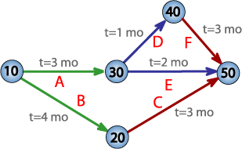</A> 
<DIV class=thumbcaption>
<DIV class=magnify><A class=internal title=Enlarge 
href="http://en.wikipedia.org/wiki/File:Pert_chart_colored.gif"></A></DIV><A 
class=mw-redirect title=PERT href="http://en.wikipedia.org/wiki/PERT">PERT 
network chart</A> for a seven-month project with five 
milestones</DIV></DIV></DIV>
<P>At the same time, as project-scheduling models were being developed, 
technology for project cost estimating, cost management, and engineering 
economics was evolving, with pioneering work by Hans Lang and others. In 1956, 
the American Association of Cost Engineers (now <A title="AACE International" 
href="http://en.wikipedia.org/wiki/AACE_International">AACE International</A>; 
the Association for the Advancement of <A class=mw-redirect 
title="Cost Engineering" 
href="http://en.wikipedia.org/wiki/Cost_Engineering">Cost Engineering</A>) was 
formed by early practitioners of project management and the associated 
specialties of planning and scheduling, cost estimating, and cost/schedule 
control (project control). AACE continued its pioneering work and in 2006 
released the first integrated process for portfolio, program and project 
management (<A class=mw-redirect title="Total Cost Management" 
href="http://en.wikipedia.org/wiki/Total_Cost_Management">Total Cost 
Management</A> Framework).</P>
<P>The <A title="International Project Management Association" 
href="http://en.wikipedia.org/wiki/International_Project_Management_Association">International 
Project Management Association</A> (IPMA) was founded in Europe in 1967,<SUP 
class=reference id=cite_ref-12><A 
href="http://en.wikipedia.org/wiki/Project_management#cite_note-12"><SPAN>[</SPAN>13<SPAN>]</SPAN></A></SUP> 
as a federation of several national project management associations. IPMA 
maintains its federal structure today and now includes member associations on 
every continent except Antarctica. IPMA offers a Four Level Certification 
program based on the IPMA Competence Baseline (ICB) <A class="external free" 
href="http://www.ipma.ch/publication/Pages/ICB-IPMACompetenceBaseline.aspx" 
rel=nofollow>http://www.ipma.ch/publication/Pages/ICB-IPMACompetenceBaseline.aspx</A>. 
The ICB covers technical competences, contextual competences, and behavioral 
competences.</P>
<P>In 1969, the <A title="Project Management Institute" 
href="http://en.wikipedia.org/wiki/Project_Management_Institute">Project 
Management Institute</A> (PMI) was formed in the USA.<SUP class=reference 
id=cite_ref-13><A 
href="http://en.wikipedia.org/wiki/Project_management#cite_note-13"><SPAN>[</SPAN>14<SPAN>]</SPAN></A></SUP> 
PMI publishes <I><A title="A Guide to the Project Management Body of Knowledge" 
href="http://en.wikipedia.org/wiki/A_Guide_to_the_Project_Management_Body_of_Knowledge">A 
Guide to the Project Management Body of Knowledge</A></I> (PMBOK Guide), which 
describes project management practices that are common to "most projects, most 
of the time." PMI also offers multiple certifications.</P>
<H2><SPAN class=editsection>[<A 
title="Edit section: Project management approaches" 
href="http://en.wikipedia.org/w/index.php?title=Project_management&amp;action=edit&amp;section=2">edit</A>]</SPAN> 
<SPAN class=mw-headline id=Project_management_approaches>Project management 
approaches</SPAN></H2>
<P>There are a number of approaches to managing project activities including <A 
class=mw-redirect title="Agile Project Management" 
href="http://en.wikipedia.org/wiki/Agile_Project_Management">agile</A>, 
interactive, incremental, and phased approaches.</P>
<P>Regardless of the methodology employed, careful consideration must be given 
to the overall project objectives, timeline, and cost, as well as the roles and 
responsibilities of all participants and stakeholders.</P>
<H3><SPAN class=editsection>[<A title="Edit section: The traditional approach" 
href="http://en.wikipedia.org/w/index.php?title=Project_management&amp;action=edit&amp;section=3">edit</A>]</SPAN> 
<SPAN class=mw-headline id=The_traditional_approach>The traditional 
approach</SPAN></H3>
<P>A traditional phased approach identifies a sequence of steps to be completed. 
In the "traditional approach", we can distinguish 5 components of a project (4 
stages plus control) in the development of a project:</P>
<DIV class="thumb tright">
<DIV class=thumbinner style="WIDTH: 362px"><A class=image 
href="http://en.wikipedia.org/wiki/File:Project_Management_(phases).png"></A> 
<DIV class=thumbcaption>
<DIV class=magnify><A class=internal title=Enlarge 
href="http://en.wikipedia.org/wiki/File:Project_Management_(phases).png"></A></DIV>Typical development phases of a project</DIV></DIV></DIV>
<UL>
  <LI>Project initiation stage; 
  <LI><A title="Project planning" 
  href="http://en.wikipedia.org/wiki/Project_planning">Project planning</A> or 
  design stage; 
  <LI>Project execution or production stage; 
  <LI>Project monitoring and controlling systems; 
  <LI>Project completion stage. </LI></UL>
<P>Not all the projects will visit every stage as projects can be terminated 
before they reach completion. Some projects do not follow a structured planning 
and/or monitoring stages. Some projects will go through steps 2, 3 and 4 
multiple times.</P>
<P>Many industries use variations on these project stages. For example, when 
working on a brick and mortar design and construction, projects will typically 
progress through stages like Pre-Planning, Conceptual Design, Schematic Design, 
Design Development, Construction Drawings (or Contract Documents), and 
Construction Administration. In <A title="Software development" 
href="http://en.wikipedia.org/wiki/Software_development">software 
development</A>, this approach is often known as the <A title="Waterfall model" 
href="http://en.wikipedia.org/wiki/Waterfall_model">waterfall model</A><SUP 
class=reference id=cite_ref-Roy70_14-0><A 
href="http://en.wikipedia.org/wiki/Project_management#cite_note-Roy70-14"><SPAN>[</SPAN>15<SPAN>]</SPAN></A></SUP>, 
i.e., one series of tasks after another in linear sequence. In software 
development many organizations have adapted the <A class=mw-redirect 
title="Rational Unified Process" 
href="http://en.wikipedia.org/wiki/Rational_Unified_Process">Rational Unified 
Process</A> (RUP) to fit this methodology, although RUP does not require or 
explicitly recommend this practice. Waterfall development works well for small, 
well defined projects, but often fails in larger projects of undefined and 
ambiguous nature. The <A title="Cone of Uncertainty" 
href="http://en.wikipedia.org/wiki/Cone_of_Uncertainty">Cone of Uncertainty</A> 
explains some of this as the planning made on the initial phase of the project 
suffers from a high degree of uncertainty. This becomes especially true as 
software development is often the realization of a new or novel product. In 
projects where <A class=mw-redirect title=Requirements 
href="http://en.wikipedia.org/wiki/Requirements">requirements</A> have not been 
finalized and can change, <A title="Requirements management" 
href="http://en.wikipedia.org/wiki/Requirements_management">requirements 
management</A> is used to develop an accurate and complete definition of the 
behavior of software that can serve as the basis for software development<SUP 
class=reference id=cite_ref-Stellman05_15-0><A 
href="http://en.wikipedia.org/wiki/Project_management#cite_note-Stellman05-15"><SPAN>[</SPAN>16<SPAN>]</SPAN></A></SUP>. 
While the terms may differ from industry to industry, the actual stages 
typically follow common steps to <A title="Problem solving" 
href="http://en.wikipedia.org/wiki/Problem_solving">problem solving</A> — 
"defining the problem, weighing options, choosing a path, implementation and 
evaluation."</P>
<H3><SPAN class=editsection>[<A 
title="Edit section: Critical Chain Project Management" 
href="http://en.wikipedia.org/w/index.php?title=Project_management&amp;action=edit&amp;section=4">edit</A>]</SPAN> 
<SPAN class=mw-headline id=Critical_Chain_Project_Management>Critical Chain 
Project Management</SPAN></H3>
<P><A title="Critical Chain Project Management" 
href="http://en.wikipedia.org/wiki/Critical_Chain_Project_Management">Critical 
Chain Project Management</A> (CCPM) is a method of planning and managing 
projects that puts more emphasis on the resources (physical and human) needed in 
order to execute project tasks. It is an application of the <A 
title="Theory of Constraints" 
href="http://en.wikipedia.org/wiki/Theory_of_Constraints">Theory of 
Constraints</A> (TOC) to projects. The goal is to increase the rate of 
throughput (or completion rates) of projects in an organization. Applying the 
first three of the five focusing steps of TOC, the system constraint for all 
projects is identified as are the resources. To exploit the constraint, tasks on 
the critical chain are given priority over all other activities. Finally, 
projects are planned and managed to ensure that the resources are ready when the 
critical chain tasks must start, subordinating all other resources to the 
critical chain.</P>
<P>Regardless of project type, the project plan should undergo <A 
class=mw-redirect title="Resource Leveling" 
href="http://en.wikipedia.org/wiki/Resource_Leveling">Resource Leveling</A>, and 
the longest sequence of resource-constrained tasks should be identified as the 
critical chain. In multi-project environments, resource leveling should be 
performed across projects. However, it is often enough to identify (or simply 
select) a single "drum" resource—a resource that acts as a constraint across 
projects—and stagger projects based on the availability of that single 
resource.</P>
<DIV class="thumb tright">
<DIV class=thumbinner style="WIDTH: 182px"><A class=image 
href="http://en.wikipedia.org/wiki/File:Xp-loop_with_time_frames.svg">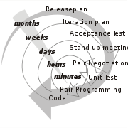</A> 
<DIV class=thumbcaption>
<DIV class=magnify><A class=internal title=Enlarge 
href="http://en.wikipedia.org/wiki/File:Xp-loop_with_time_frames.svg"></A></DIV>Planning and <A title=Feedback 
href="http://en.wikipedia.org/wiki/Feedback">feedback</A> loops in <A 
title="Extreme Programming" 
href="http://en.wikipedia.org/wiki/Extreme_Programming">Extreme Programming</A> 
(XP) with the time frames of the multiple loops.</DIV></DIV></DIV>
<H3><SPAN class=editsection>[<A title="Edit section: Extreme Project Management" 
href="http://en.wikipedia.org/w/index.php?title=Project_management&amp;action=edit&amp;section=5">edit</A>]</SPAN> 
<SPAN class=mw-headline id=Extreme_Project_Management>Extreme Project 
Management</SPAN></H3>
<P>In critical studies of Project Management, it has been noted that several of 
these fundamentally <A class=mw-redirect title=PERT 
href="http://en.wikipedia.org/wiki/PERT">PERT</A>-based models are not well 
suited for the multi-project company environment of today.<SUP 
class="noprint Template-Fact" 
title="This claim needs references to reliable sources from March 2009" 
style="WHITE-SPACE: nowrap">[<I><A title="Wikipedia:Citation needed" 
href="http://en.wikipedia.org/wiki/Wikipedia:Citation_needed">citation 
needed</A></I>]</SUP> Most of them are aimed at very large-scale, one-time, 
non-routine projects, and nowadays all kinds of management are expressed in 
terms of projects.</P>
<P>Using complex models for "projects" (or rather "tasks") spanning a few weeks 
has been proven to cause unnecessary costs and low maneuverability in several 
cases. Instead, project management experts try to identify different 
"lightweight" models, such as <A class=mw-redirect 
title="Agile Project Management" 
href="http://en.wikipedia.org/wiki/Agile_Project_Management">Agile Project 
Management</A> methods including <A title="Extreme Programming" 
href="http://en.wikipedia.org/wiki/Extreme_Programming">Extreme Programming</A> 
for software development and <A class=mw-redirect title="Scrum (in management)" 
href="http://en.wikipedia.org/wiki/Scrum_(in_management)">Scrum</A> 
techniques.</P>
<P>The generalization of Extreme Programming to other kinds of projects is <A 
title="Extreme project management" 
href="http://en.wikipedia.org/wiki/Extreme_project_management">extreme project 
management</A>, which may be used in combination with the <A 
title="Process modeling" 
href="http://en.wikipedia.org/wiki/Process_modeling">process modeling</A> and 
management principles of <A title="Human interaction management" 
href="http://en.wikipedia.org/wiki/Human_interaction_management">human 
interaction management</A>.</P>
<H3><SPAN class=editsection>[<A title="Edit section: Event chain methodology" 
href="http://en.wikipedia.org/w/index.php?title=Project_management&amp;action=edit&amp;section=6">edit</A>]</SPAN> 
<SPAN class=mw-headline id=Event_chain_methodology>Event chain 
methodology</SPAN></H3>
<P><A title="Event chain methodology" 
href="http://en.wikipedia.org/wiki/Event_chain_methodology">Event chain 
methodology</A> is another method that complements <A 
title="Critical path method" 
href="http://en.wikipedia.org/wiki/Critical_path_method">critical path 
method</A> and <A class=mw-redirect title="Critical chain" 
href="http://en.wikipedia.org/wiki/Critical_chain">critical chain</A> project 
management methodologies.</P>
<P>Event chain methodology is an uncertainty modeling and schedule network 
analysis technique that is focused on identifying and managing events and event 
chains that affect project schedules. Event chain methodology helps to mitigate 
the negative impact of psychological heuristics and biases, as well as to allow 
for easy modeling of uncertainties in the project schedules. Event chain 
methodology is based on the following principles.</P>
<UL>
  <LI><B>Probabilistic moment of risk:</B> An activity (task) in most real life 
  processes is not a continuous uniform process. Tasks are affected by external 
  events, which can occur at some point in the middle of the task. 
  <LI><B>Event chains:</B> Events can cause other events, which will create 
  event chains. These event chains can significantly affect the course of the 
  project. Quantitative analysis is used to determine a cumulative effect of 
  these event chains on the project schedule. 
  <LI><B>Critical events or event chains:</B> The single events or the event 
  chains that have the most potential to affect the projects are the “critical 
  events” or “critical chains of events.” They can be determined by the 
  analysis. 
  <LI><B>Project tracking with events:</B> Even if a project is partially 
  completed and data about the project duration, cost, and events occurred is 
  available, it is still possible to refine information about future potential 
  events and helps to forecast future project performance. 
  <LI><B>Event chain visualization:</B> Events and event chains can be 
  visualized using <A class=mw-redirect title="Event Chain Diagrams" 
  href="http://en.wikipedia.org/wiki/Event_Chain_Diagrams">event chain 
  diagrams</A> on a <A title="Gantt chart" 
  href="http://en.wikipedia.org/wiki/Gantt_chart">Gantt chart</A>. </LI></UL>
<H3><SPAN class=editsection>[<A title="Edit section: PRINCE2" 
href="http://en.wikipedia.org/w/index.php?title=Project_management&amp;action=edit&amp;section=7">edit</A>]</SPAN> 
<SPAN class=mw-headline id=PRINCE2>PRINCE2</SPAN></H3>
<DIV class="thumb tright">
<DIV class=thumbinner style="WIDTH: 242px"><A class=image 
href="http://en.wikipedia.org/wiki/File:Prince2_procces_model_.jpg">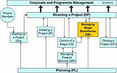</A> 
<DIV class=thumbcaption>
<DIV class=magnify><A class=internal title=Enlarge 
href="http://en.wikipedia.org/wiki/File:Prince2_procces_model_.jpg"></A></DIV>The 
<A title=PRINCE2 href="http://en.wikipedia.org/wiki/PRINCE2">PRINCE2</A> process 
model</DIV></DIV></DIV>
<P><A title=PRINCE2 href="http://en.wikipedia.org/wiki/PRINCE2">PRINCE2</A> is a 
structured approach to project management, released in 1996 as a generic project 
management method.<SUP class=reference id=cite_ref-16><A 
href="http://en.wikipedia.org/wiki/Project_management#cite_note-16"><SPAN>[</SPAN>17<SPAN>]</SPAN></A></SUP> 
It combined the original PRINCE methodology with IBM's MITP (managing the 
implementation of the total project) methodology. PRINCE2 provides a method for 
managing projects within a clearly defined framework. PRINCE2 describes 
procedures to coordinate people and activities in a project, how to design and 
supervise the project, and what to do if the project has to be adjusted if it 
does not develop as planned.</P>
<P>In the method, each process is specified with its key inputs and outputs and 
with specific goals and activities to be carried out. This allows for automatic 
control of any deviations from the plan. Divided into manageable stages, the 
method enables an efficient control of resources. On the basis of close 
monitoring, the project can be carried out in a controlled and organized 
way.</P>
<P>PRINCE2 provides a common language for all participants in the project. The 
various management roles and responsibilities involved in a project are fully 
described and are adaptable to suit the complexity of the project and skills of 
the organization.</P>
<H3><SPAN class=editsection>[<A title="Edit section: Process-based management" 
href="http://en.wikipedia.org/w/index.php?title=Project_management&amp;action=edit&amp;section=8">edit</A>]</SPAN> 
<SPAN class=mw-headline id=Process-based_management>Process-based 
management</SPAN></H3>
<DIV class="thumb tright">
<DIV class=thumbinner style="WIDTH: 242px"><A class=image 
href="http://en.wikipedia.org/wiki/File:Capability_Maturity_Model.jpg">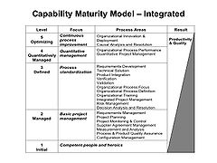</A> 
<DIV class=thumbcaption>
<DIV class=magnify><A class=internal title=Enlarge 
href="http://en.wikipedia.org/wiki/File:Capability_Maturity_Model.jpg"></A></DIV><A 
title="Capability Maturity Model" 
href="http://en.wikipedia.org/wiki/Capability_Maturity_Model">Capability 
Maturity Model</A>, predecessor of the <A class=mw-redirect title=CMMI 
href="http://en.wikipedia.org/wiki/CMMI">CMMI</A> Model</DIV></DIV></DIV>
<P>Also furthering the concept of project control is the incorporation of <A 
title="Process-based management" 
href="http://en.wikipedia.org/wiki/Process-based_management">process-based 
management</A>. This area has been driven by the use of Maturity models such as 
the <A class=mw-redirect title=CMMI 
href="http://en.wikipedia.org/wiki/CMMI">CMMI</A> (Capability Maturity Model 
Integration) and <A title="ISO 15504" 
href="http://en.wikipedia.org/wiki/ISO_15504">ISO/IEC15504</A> (SPICE - Software 
Process Improvement and Capability Estimation).</P>
<P><A class=mw-redirect title="Agile Project Management" 
href="http://en.wikipedia.org/wiki/Agile_Project_Management">Agile Project 
Management</A> approaches based on the principles of <A 
title="Human interaction management" 
href="http://en.wikipedia.org/wiki/Human_interaction_management">human 
interaction management</A> are founded on a process view of human collaboration. 
This contrasts sharply with the traditional approach. In the <A 
title="Agile software development" 
href="http://en.wikipedia.org/wiki/Agile_software_development">agile software 
development</A> or <A title="Flexible product development" 
href="http://en.wikipedia.org/wiki/Flexible_product_development">flexible 
product development</A> approach, the project is seen as a series of relatively 
small tasks conceived and executed as the situation demands in an adaptive 
manner, rather than as a completely pre-planned process.</P>
<H2><SPAN class=editsection>[<A title="Edit section: Project development stages" 
href="http://en.wikipedia.org/w/index.php?title=Project_management&amp;action=edit&amp;section=9">edit</A>]</SPAN> 
<SPAN class=mw-headline id=Project_development_stages>Project development 
stages</SPAN></H2>
<P>Traditionally, project development includes a number of elements: four to 
five stages, and a control system. Regardless of the methodology used, the 
project development process will have the same major stages.</P>
<DIV class="thumb tright">
<DIV class=thumbinner style="WIDTH: 182px"><A class=image 
href="http://en.wikipedia.org/wiki/File:Project_development_stages.jpg">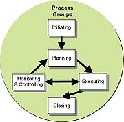</A> 
<DIV class=thumbcaption>
<DIV class=magnify><A class=internal title=Enlarge 
href="http://en.wikipedia.org/wiki/File:Project_development_stages.jpg"></A></DIV>The 
project development stages<SUP class=reference id=cite_ref-VA03_17-0><A 
href="http://en.wikipedia.org/wiki/Project_management#cite_note-VA03-17"><SPAN>[</SPAN>18<SPAN>]</SPAN></A></SUP></DIV></DIV></DIV>
<P>Major stages generally include:</P>
<UL>
  <LI>Initiation 
  <LI>Planning or development 
  <LI>Production or execution 
  <LI>Monitoring and controlling 
  <LI>Closing </LI></UL>
<P>In project environments with a significant exploratory element (e.g., <A 
title="Research and development" 
href="http://en.wikipedia.org/wiki/Research_and_development">Research and 
development</A>), these stages may be supplemented with decision points (go/no 
go decisions) at which the project's continuation is debated and decided. An 
example is the <A title="Stage-Gate model" 
href="http://en.wikipedia.org/wiki/Stage-Gate_model">Stage-Gate model</A>.</P>
<H3><SPAN class=editsection>[<A title="Edit section: Initiation" 
href="http://en.wikipedia.org/w/index.php?title=Project_management&amp;action=edit&amp;section=10">edit</A>]</SPAN> 
<SPAN class=mw-headline id=Initiation>Initiation</SPAN></H3>
<DIV class="thumb tleft">
<DIV class=thumbinner style="WIDTH: 242px"><A class=image 
href="http://en.wikipedia.org/wiki/File:Initiating_Process_Group_Processes.jpg">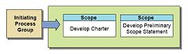</A> 
<DIV class=thumbcaption>
<DIV class=magnify><A class=internal title=Enlarge 
href="http://en.wikipedia.org/wiki/File:Initiating_Process_Group_Processes.jpg"></A></DIV>Initiating Process Group Processes<SUP class=reference 
id=cite_ref-VA03_17-1><A 
href="http://en.wikipedia.org/wiki/Project_management#cite_note-VA03-17"><SPAN>[</SPAN>18<SPAN>]</SPAN></A></SUP></DIV></DIV></DIV>
<P>The initiation stage determines the nature and scope of the development. If 
this stage is not performed well, it is unlikely that the project will be 
successful in meeting the business’s needs. The key project controls needed here 
are an understanding of the business environment and making sure that all 
necessary controls are incorporated into the project. Any deficiencies should be 
reported and a recommendation should be made to fix them.</P>
<P>The initiation stage should include a plan that encompasses the following 
areas:</P>
<UL>
  <LI>Analyzing the <A title=Business 
  href="http://en.wikipedia.org/wiki/Business">business</A> <A title=Requirement 
  href="http://en.wikipedia.org/wiki/Requirement">needs/requirements</A> in 
  measurable goals 
  <LI>Reviewing of the current <A title="Business operations" 
  href="http://en.wikipedia.org/wiki/Business_operations">operations</A> 
  <LI>Conceptual <A title="New product development" 
  href="http://en.wikipedia.org/wiki/New_product_development">design</A> of the 
  operation of the final product 
  <LI>Equipment and <A title=Contract 
  href="http://en.wikipedia.org/wiki/Contract">contracting</A> requirements 
  including an assessment of long <A title="Lead time" 
  href="http://en.wikipedia.org/wiki/Lead_time">lead time</A> items 
  <LI><A title="Financial analysis" 
  href="http://en.wikipedia.org/wiki/Financial_analysis">Financial analysis</A> 
  of the costs and benefits including a <A title=Budget 
  href="http://en.wikipedia.org/wiki/Budget">budget</A> 
  <LI><A title="Stakeholder analysis" 
  href="http://en.wikipedia.org/wiki/Stakeholder_analysis">Stakeholder 
  analysis</A>, including users, and support personnel for the project 
  <LI><A title="Project charter" 
  href="http://en.wikipedia.org/wiki/Project_charter">Project charter</A> 
  including costs, tasks, <A title=Deliverable 
  href="http://en.wikipedia.org/wiki/Deliverable">deliverables</A>, and schedule 
  </LI></UL>
<H3><SPAN class=editsection>[<A title="Edit section: Planning and design" 
href="http://en.wikipedia.org/w/index.php?title=Project_management&amp;action=edit&amp;section=11">edit</A>]</SPAN> 
<SPAN class=mw-headline id=Planning_and_design>Planning and design</SPAN></H3>
<DIV class="thumb tright">
<DIV class=thumbinner style="WIDTH: 242px"><A class=image 
href="http://en.wikipedia.org/wiki/File:Planning_Process_Group_Activities.jpg">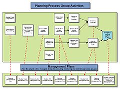</A> 

<DIV class=thumbcaption>
<DIV class=magnify><A class=internal title=Enlarge 
href="http://en.wikipedia.org/wiki/File:Planning_Process_Group_Activities.jpg"></A></DIV>Planning Process Group Activities<SUP class=reference 
id=cite_ref-VA03_17-2><A 
href="http://en.wikipedia.org/wiki/Project_management#cite_note-VA03-17"><SPAN>[</SPAN>18<SPAN>]</SPAN></A></SUP></DIV></DIV></DIV>
<P>After the initiation stage, the system is designed. Occasionally, a small 
prototype of the final product is built and tested. Testing is generally 
performed by a combination of testers and end users, and can occur after the 
prototype is built or concurrently. Controls should be in place that ensure that 
the final product will meet the specifications of the project charter. The 
results of the design stage should include a product design that:</P>
<UL>
  <LI>Satisfies the project sponsor, end user, and business requirements 
  <LI>Functions as it was intended 
  <LI>Can be produced within acceptable quality standards 
  <LI>Can be produced within time and budget constraints </LI></UL>
<H3><SPAN class=editsection>[<A title="Edit section: Executing" 
href="http://en.wikipedia.org/w/index.php?title=Project_management&amp;action=edit&amp;section=12">edit</A>]</SPAN> 
<SPAN class=mw-headline id=Executing>Executing</SPAN></H3>
<DIV class="thumb tleft">
<DIV class=thumbinner style="WIDTH: 242px"><A class=image 
href="http://en.wikipedia.org/wiki/File:Executing_Process_Group_Processes.jpg">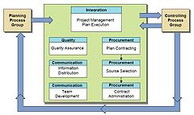</A> 

<DIV class=thumbcaption>
<DIV class=magnify><A class=internal title=Enlarge 
href="http://en.wikipedia.org/wiki/File:Executing_Process_Group_Processes.jpg"></A></DIV>Executing Process Group Processes<SUP class=reference 
id=cite_ref-VA03_17-3><A 
href="http://en.wikipedia.org/wiki/Project_management#cite_note-VA03-17"><SPAN>[</SPAN>18<SPAN>]</SPAN></A></SUP></DIV></DIV></DIV>
<P>Executing consists of the processes used to complete the work defined in the 
project management plan to accomplish the project's requirements. Execution 
process involves coordinating people and resources, as well as integrating and 
performing the activities of the project in accordance with the project 
management plan. The deliverables are produced as outputs from the processes 
performed as defined in the project management plan. type of design.</P>
<H3><SPAN class=editsection>[<A title="Edit section: Monitoring and Controlling" 
href="http://en.wikipedia.org/w/index.php?title=Project_management&amp;action=edit&amp;section=13">edit</A>]</SPAN> 
<SPAN class=mw-headline id=Monitoring_and_Controlling>Monitoring and 
Controlling</SPAN></H3>
<P>Monitoring and Controlling consists of those processes performed to observe 
project execution so that potential problems can be identified in a timely 
manner and corrective action can be taken, when necessary, to control the 
execution of the project. The key benefit is that project performance is 
observed and measured regularly to identify variances from the project 
management plan.</P>
<DIV class="thumb tright">
<DIV class=thumbinner style="WIDTH: 242px"><A class=image 
href="http://en.wikipedia.org/wiki/File:Monitoring_and_Controlling_Process_Group_Processes.jpg">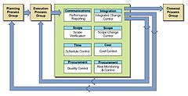</A> 
<DIV class=thumbcaption>
<DIV class=magnify><A class=internal title=Enlarge 
href="http://en.wikipedia.org/wiki/File:Monitoring_and_Controlling_Process_Group_Processes.jpg"></A></DIV>Monitoring and Controlling Process Group Processes<SUP 
class=reference id=cite_ref-VA03_17-4><A 
href="http://en.wikipedia.org/wiki/Project_management#cite_note-VA03-17"><SPAN>[</SPAN>18<SPAN>]</SPAN></A></SUP></DIV></DIV></DIV>
<P>Monitoring and Controlling includes:</P>
<UL>
  <LI>Measuring the ongoing project activities (<I>where we are</I>); 
  <LI>Monitoring the project variables (cost, effort, scope, etc.) against the 
  project management plan and the project performance baseline (<I>where we 
  should be</I>); 
  <LI>Identify corrective actions to address issues and risks properly (<I>How 
  can we get on track again</I>); 
  <LI>Influencing the factors that could circumvent integrated change control so 
  only approved changes are implemented </LI></UL>
<P>In multi-phase projects, the Monitoring and Controlling process also provides 
feedback between project phases, in order to implement corrective or preventive 
actions to bring the project into compliance with the project management 
plan.</P>
<P>Project Maintenance is an ongoing process, and it includes:</P>
<UL>
  <LI>Continuing support of end users 
  <LI>Correction of errors 
  <LI>Updates of the <A class=mw-redirect title=Software 
  href="http://en.wikipedia.org/wiki/Software">software</A> over time </LI></UL>
<DIV class="thumb tright">
<DIV class=thumbinner style="WIDTH: 212px"><A class=image 
href="http://en.wikipedia.org/wiki/File:Project_Management_(project_control).png"></A> 
<DIV class=thumbcaption>
<DIV class=magnify><A class=internal title=Enlarge 
href="http://en.wikipedia.org/wiki/File:Project_Management_(project_control).png"></A></DIV>Monitoring and Controlling cycle</DIV></DIV></DIV>
<P>In this stage, <A class=mw-redirect title=Auditor 
href="http://en.wikipedia.org/wiki/Auditor">auditors</A> should pay attention to 
how effectively and quickly user problems are resolved.</P>
<P>Over the course of any construction project, the work scope may change. 
Change is a normal and expected part of the construction process. Changes can be 
the result of necessary design modifications, differing site conditions, 
material availability, contractor-requested changes, value engineering and 
impacts from third parties, to name a few. Beyond executing the change in the 
field, the change normally needs to be documented to show what was actually 
constructed. This is referred to as Change Management. Hence, the owner usually 
requires a final record to show all changes or, more specifically, any change 
that modifies the tangible portions of the finished work. The record is made on 
the contract documents – usually, but not necessarily limited to, the design 
drawings. The end product of this effort is what the industry terms as-built 
drawings, or more simply, “as built.” The requirement for providing them is a 
norm in construction contracts.</P>
<P>When changes are introduced to the project, the viability of the project has 
to be re-assessed. It is important not to lose sight of the initial goals and 
targets of the projects. When the changes accumulate, the forecasted result may 
not justify the original proposed investment in the project.</P>
<H3><SPAN class=editsection>[<A title="Edit section: Closing" 
href="http://en.wikipedia.org/w/index.php?title=Project_management&amp;action=edit&amp;section=14">edit</A>]</SPAN> 
<SPAN class=mw-headline id=Closing>Closing</SPAN></H3>
<DIV class="thumb tright">
<DIV class=thumbinner style="WIDTH: 242px"><A class=image 
href="http://en.wikipedia.org/wiki/File:Closing_Process_Group_Processes.jpg">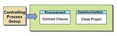</A> 
<DIV class=thumbcaption>
<DIV class=magnify><A class=internal title=Enlarge 
href="http://en.wikipedia.org/wiki/File:Closing_Process_Group_Processes.jpg"></A></DIV>Closing Process Group Processes.<SUP class=reference 
id=cite_ref-VA03_17-5><A 
href="http://en.wikipedia.org/wiki/Project_management#cite_note-VA03-17"><SPAN>[</SPAN>18<SPAN>]</SPAN></A></SUP></DIV></DIV></DIV>
<P>Closing includes the formal acceptance of the project and the ending thereof. 
Administrative activities include the archiving of the files and documenting 
lessons learned.</P>
<P>This phase consists of:</P>
<UL>
  <LI><B>Project close</B>: Finalize all activities across all of the process 
  groups to formally close the project or a project phase 
  <LI><B>Contract closure</B>: Complete and settle each contract (including the 
  resolution of any open items) and close each contract applicable to the 
  project or project phase </LI></UL>
<H3><SPAN class=editsection>[<A title="Edit section: Project control systems" 
href="http://en.wikipedia.org/w/index.php?title=Project_management&amp;action=edit&amp;section=15">edit</A>]</SPAN> 
<SPAN class=mw-headline id=Project_control_systems>Project control 
systems</SPAN></H3>
<P>Project control is that element of a project that keeps it on-track, on-time 
and within budget. Project control begins early in the project with planning and 
ends late in the project with post-implementation review, having a thorough 
involvement of each step in the process. Each project should be assessed for the 
appropriate level of control needed: too much control is too time consuming, too 
little control is very risky. If project control is not implemented correctly, 
the cost to the business should be clarified in terms of errors, fixes, and 
additional <A title=Audit href="http://en.wikipedia.org/wiki/Audit">audit</A> 
fees.</P>
<P>Control systems are needed for cost, <A title=Risk 
href="http://en.wikipedia.org/wiki/Risk">risk</A>, quality, communication, time, 
change, procurement, and human resources. In addition, auditors should consider 
how important the projects are to the <A title="Financial statements" 
href="http://en.wikipedia.org/wiki/Financial_statements">financial 
statements</A>, how reliant the stakeholders are on controls, and how many 
controls exist. Auditors should review the development process and procedures 
for how they are implemented. The process of development and the quality of the 
final product may also be assessed if needed or requested. A business may want 
the auditing firm to be involved throughout the process to catch problems 
earlier on so that they can be fixed more easily. An auditor can serve as a 
controls <A title=Consultant 
href="http://en.wikipedia.org/wiki/Consultant">consultant</A> as part of the 
development team or as an independent auditor as part of an audit.</P>
<P>Businesses sometimes use formal systems development processes. These help 
assure that systems are developed successfully. A formal process is more 
effective in creating strong controls, and auditors should review this process 
to confirm that it is well designed and is followed in practice. A good formal 
systems development plan outlines:</P>
<UL>
  <LI>A <A title=Strategy 
  href="http://en.wikipedia.org/wiki/Strategy">strategy</A> to align development 
  with the organization’s broader objectives 
  <LI>Standards for new systems 
  <LI>Project management policies for timing and <A class=mw-redirect 
  title=Budgeting href="http://en.wikipedia.org/wiki/Budgeting">budgeting</A> 
  <LI>Procedures describing the process 
  <LI>Evaluation of quality of change </LI></UL>
<H2><SPAN class=editsection>[<A title="Edit section: Project management topics" 
href="http://en.wikipedia.org/w/index.php?title=Project_management&amp;action=edit&amp;section=16">edit</A>]</SPAN> 
<SPAN class=mw-headline id=Project_management_topics>Project management 
topics</SPAN></H2>
<H3><SPAN class=editsection>[<A title="Edit section: Project managers" 
href="http://en.wikipedia.org/w/index.php?title=Project_management&amp;action=edit&amp;section=17">edit</A>]</SPAN> 
<SPAN class=mw-headline id=Project_managers>Project managers</SPAN></H3>
<P>A <A title="Project manager" 
href="http://en.wikipedia.org/wiki/Project_manager">project manager</A> is a 
professional in the field of project management. Project managers can have the 
responsibility of the planning, execution, and closing of any <A title=Project 
href="http://en.wikipedia.org/wiki/Project">project</A>, typically relating to 
<A class=mw-redirect title="Construction industry" 
href="http://en.wikipedia.org/wiki/Construction_industry">construction 
industry</A>, <A title=Architecture 
href="http://en.wikipedia.org/wiki/Architecture">architecture</A>, <A 
title="Computer networking" 
href="http://en.wikipedia.org/wiki/Computer_networking">computer networking</A>, 
<A class=mw-redirect title=Telecommunications 
href="http://en.wikipedia.org/wiki/Telecommunications">telecommunications</A> or 
<A title="Software development" 
href="http://en.wikipedia.org/wiki/Software_development">software 
development</A>. Many other fields in the production, design and service 
industries also have project managers.</P>
<P>A project manager is the person accountable for accomplishing the stated 
project objectives. Key project management responsibilities include creating 
clear and attainable project objectives, building the project requirements, and 
managing the triple constraint for projects, which is cost, time, and scope.</P>
<P>A project manager is often a client representative and has to determine and 
implement the exact needs of the client, based on knowledge of the firm they are 
representing. The ability to adapt to the various internal procedures of the 
contracting party, and to form close links with the nominated representatives, 
is essential in ensuring that the key issues of cost, time, quality and above 
all, client satisfaction, can be realized.</P>
<H3><SPAN class=editsection>[<A 
title="Edit section: Project Management Triangle" 
href="http://en.wikipedia.org/w/index.php?title=Project_management&amp;action=edit&amp;section=18">edit</A>]</SPAN> 
<SPAN class=mw-headline id=Project_Management_Triangle>Project Management 
Triangle</SPAN></H3>
<DIV class="thumb tright">
<DIV class=thumbinner style="WIDTH: 242px"><A class=image 
href="http://en.wikipedia.org/wiki/File:The_triad_constraints.jpg">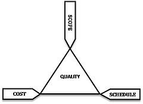</A> 
<DIV class=thumbcaption>
<DIV class=magnify><A class=internal title=Enlarge 
href="http://en.wikipedia.org/wiki/File:The_triad_constraints.jpg"></A></DIV>The 
<A class=mw-redirect title="Project Management Triangle" 
href="http://en.wikipedia.org/wiki/Project_Management_Triangle">Project 
Management Triangle</A>.</DIV></DIV></DIV>
<P>Like any human undertaking, projects need to be performed and delivered under 
certain constraints. Traditionally, these constraints have been listed as 
"scope," "time," and "cost".<SUP class=reference id=cite_ref-Chat_1-2><A 
href="http://en.wikipedia.org/wiki/Project_management#cite_note-Chat-1"><SPAN>[</SPAN>2<SPAN>]</SPAN></A></SUP> 
These are also referred to as the "<A class=mw-redirect 
title="Project Management Triangle" 
href="http://en.wikipedia.org/wiki/Project_Management_Triangle">Project 
Management Triangle</A>," where each side represents a constraint. One side of 
the triangle cannot be changed without affecting the others. A further 
refinement of the constraints separates product "quality" or "performance" from 
scope, and turns quality into a fourth constraint.</P>
<P>The time constraint refers to the amount of time available to complete a 
project. The cost constraint refers to the budgeted amount available for the 
project. The scope constraint refers to what must be done to produce the 
project's end result. These three constraints are often competing constraints: 
increased scope typically means increased time and increased cost, a tight time 
constraint could mean increased costs and reduced scope, and a tight budget 
could mean increased time and reduced scope.</P>
<P>The discipline of Project Management is about providing the tools and 
techniques that enable the project team (not just the project manager) to 
organize their work to meet these constraints.</P>
<H3><SPAN class=editsection>[<A title="Edit section: Work Breakdown Structure" 
href="http://en.wikipedia.org/w/index.php?title=Project_management&amp;action=edit&amp;section=19">edit</A>]</SPAN> 
<SPAN class=mw-headline id=Work_Breakdown_Structure>Work Breakdown 
Structure</SPAN></H3>
<DIV class="thumb tleft">
<DIV class=thumbinner style="WIDTH: 242px"><A class=image 
href="http://en.wikipedia.org/wiki/File:NASA_NF_533_reporting_structure.jpg">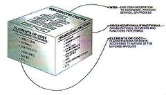</A> 
<DIV class=thumbcaption>
<DIV class=magnify><A class=internal title=Enlarge 
href="http://en.wikipedia.org/wiki/File:NASA_NF_533_reporting_structure.jpg"></A></DIV>Example of a <A title="Work breakdown structure" 
href="http://en.wikipedia.org/wiki/Work_breakdown_structure">Work breakdown 
structure</A> applied in a NASA reporting structure.<SUP class=reference 
id=cite_ref-NASA01_18-0><A 
href="http://en.wikipedia.org/wiki/Project_management#cite_note-NASA01-18"><SPAN>[</SPAN>19<SPAN>]</SPAN></A></SUP></DIV></DIV></DIV>
<P>The <A class=mw-redirect title="Work Breakdown Structure" 
href="http://en.wikipedia.org/wiki/Work_Breakdown_Structure">Work Breakdown 
Structure</A> (WBS) is a <A title="Tree structure" 
href="http://en.wikipedia.org/wiki/Tree_structure">tree structure</A>, which 
shows a subdivision of effort required to achieve an objective; for example a <A 
title=Program href="http://en.wikipedia.org/wiki/Program">program</A>, <A 
title=Project href="http://en.wikipedia.org/wiki/Project">project</A>, and <A 
title=Contract href="http://en.wikipedia.org/wiki/Contract">contract</A>. The 
WBS may be <A title=Hardware 
href="http://en.wikipedia.org/wiki/Hardware">hardware</A>, <A 
title="Product (business)" 
href="http://en.wikipedia.org/wiki/Product_(business)">product</A>, <A 
title="Service (economics)" 
href="http://en.wikipedia.org/wiki/Service_(economics)">service</A>, or <A 
title="Business process" 
href="http://en.wikipedia.org/wiki/Business_process">process</A> oriented.</P>
<P>A WBS can be developed by starting with the end objective and successively 
subdividing it into manageable components in terms of size, duration, and 
responsibility (e.g., systems, subsystems, components, tasks, subtasks, and work 
packages), which include all steps necessary to achieve the objective.<SUP 
class=reference id=cite_ref-Stellman05_15-1><A 
href="http://en.wikipedia.org/wiki/Project_management#cite_note-Stellman05-15"><SPAN>[</SPAN>16<SPAN>]</SPAN></A></SUP></P>
<P>The Work Breakdown Structure provides a common framework for the natural 
development of the overall planning and control of a contract and is the basis 
for dividing work into definable increments from which the statement of work can 
be developed and technical, schedule, cost, and labor hour reporting can be 
established.<SUP class=reference id=cite_ref-NASA01_18-1><A 
href="http://en.wikipedia.org/wiki/Project_management#cite_note-NASA01-18"><SPAN>[</SPAN>19<SPAN>]</SPAN></A></SUP></P>
<H3><SPAN class=editsection>[<A 
title="Edit section: Project Management Framework" 
href="http://en.wikipedia.org/w/index.php?title=Project_management&amp;action=edit&amp;section=20">edit</A>]</SPAN> 
<SPAN class=mw-headline id=Project_Management_Framework>Project Management 
Framework</SPAN></H3>
<DIV class="thumb tright">
<DIV class=thumbinner style="WIDTH: 362px"><A class=image 
href="http://en.wikipedia.org/wiki/File:VA_IT_Project_Management_Framework.jpg">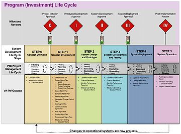</A> 
<DIV class=thumbcaption>
<DIV class=magnify><A class=internal title=Enlarge 
href="http://en.wikipedia.org/wiki/File:VA_IT_Project_Management_Framework.jpg"></A></DIV>Example of an IT Project Management Framework.<SUP 
class=reference id=cite_ref-VA03_17-6><A 
href="http://en.wikipedia.org/wiki/Project_management#cite_note-VA03-17"><SPAN>[</SPAN>18<SPAN>]</SPAN></A></SUP></DIV></DIV></DIV>
<P>The Program (Investment) Life Cycle integrates the project management and <A 
title="Systems Development Life Cycle" 
href="http://en.wikipedia.org/wiki/Systems_Development_Life_Cycle">system 
development life cycles</A> with the activities directly associated with system 
deployment and operation. By design, system operation management and related 
activities occur after the project is complete and are not documented within 
this guide.<SUP class=reference id=cite_ref-VA03_17-7><A 
href="http://en.wikipedia.org/wiki/Project_management#cite_note-VA03-17"><SPAN>[</SPAN>18<SPAN>]</SPAN></A></SUP></P>
<P>For example, see figure, in the US <A 
title="United States Department of Veterans Affairs" 
href="http://en.wikipedia.org/wiki/United_States_Department_of_Veterans_Affairs">United 
States Department of Veterans Affairs</A> (VA) the program management life cycle 
is depicted and describe in the overall VA IT Project Management Framework to 
address the integration of OMB Exhibit 300 project (investment) management 
activities and the overall project budgeting process. The VA IT Project 
Management Framework diagram illustrates Milestone 4 which occurs following the 
deployment of a system and the closing of the project. The project closing phase 
activities at the VA continues through system deployment and into system 
operation for the purpose of illustrating and describing the system activities 
the VA considers part of the project. The figure illustrates the actions and 
associated artifacts of the VA IT Project and Program Management process.<SUP 
class=reference id=cite_ref-VA03_17-8><A 
href="http://en.wikipedia.org/wiki/Project_management#cite_note-VA03-17"><SPAN>[</SPAN>18<SPAN>]</SPAN></A></SUP></P>
<H3><SPAN class=editsection>[<A title="Edit section: International standards" 
href="http://en.wikipedia.org/w/index.php?title=Project_management&amp;action=edit&amp;section=21">edit</A>]</SPAN> 
<SPAN class=mw-headline id=International_standards>International 
standards</SPAN></H3>
<P>There have been several attempts to develop Project Management <A 
title=Standardization 
href="http://en.wikipedia.org/wiki/Standardization">standards</A>, such as:</P>
<UL>
  <LI><A title="Capability Maturity Model" 
  href="http://en.wikipedia.org/wiki/Capability_Maturity_Model">Capability 
  Maturity Model</A> from the <A title="Software Engineering Institute" 
  href="http://en.wikipedia.org/wiki/Software_Engineering_Institute">Software 
  Engineering Institute</A>. 
  <LI>GAPPS, Global Alliance for Project Performance Standards- an open source 
  standard describing COMPETENCIES for project and program managers.<SUP 
  class=reference id=cite_ref-19><A 
  href="http://en.wikipedia.org/wiki/Project_management#cite_note-19"><SPAN>[</SPAN>20<SPAN>]</SPAN></A></SUP> 

  <LI><A title="A Guide to the Project Management Body of Knowledge" 
  href="http://en.wikipedia.org/wiki/A_Guide_to_the_Project_Management_Body_of_Knowledge">A 
  Guide to the Project Management Body of Knowledge</A> 
  <LI><A title="HERMES method" 
  href="http://en.wikipedia.org/wiki/HERMES_method">HERMES method</A>, Swiss 
  general project management method, selected for use in Luxembourg and 
  international organisations. 
  <LI>The ISO standards <A title="ISO 9000" 
  href="http://en.wikipedia.org/wiki/ISO_9000">ISO 9000</A>, a family of 
  standards for quality management systems, and the <A title="ISO 10006" 
  href="http://en.wikipedia.org/wiki/ISO_10006">ISO 10006</A>:2003, for Quality 
  management systems and guidelines for quality management in projects. 
  <LI><A title=PRINCE2 href="http://en.wikipedia.org/wiki/PRINCE2">PRINCE2</A>, 
  PRojects IN Controlled Environments. 
  <LI><A title="Team Software Process" 
  href="http://en.wikipedia.org/wiki/Team_Software_Process">Team Software 
  Process</A> (TSP) from the <A title="Software Engineering Institute" 
  href="http://en.wikipedia.org/wiki/Software_Engineering_Institute">Software 
  Engineering Institute</A>. 
  <LI><A class=mw-redirect title="Total Cost Management" 
  href="http://en.wikipedia.org/wiki/Total_Cost_Management">Total Cost 
  Management</A> Framework, AACE International's Methodology for Integrated 
  Portfolio, Program and Project Management) 
  <LI><A class=mw-redirect title=V-Modell 
  href="http://en.wikipedia.org/wiki/V-Modell">V-Modell</A>, an original systems 
  development method. </LI></UL>
<H3><SPAN class=editsection>[<A 
title="Edit section: Project portfolio management" 
href="http://en.wikipedia.org/w/index.php?title=Project_management&amp;action=edit&amp;section=22">edit</A>]</SPAN> 
<SPAN class=mw-headline id=Project_portfolio_management>Project portfolio 
management</SPAN></H3>
<P>An increasing number of organisations are using, what is referred to as, <A 
title="Project portfolio management" 
href="http://en.wikipedia.org/wiki/Project_portfolio_management">project 
portfolio management</A> (PPM) as a means of selecting the right projects and 
then using project management techniques<SUP class=reference 
id=cite_ref-AH04_20-0><A 
href="http://en.wikipedia.org/wiki/Project_management#cite_note-AH04-20"><SPAN>[</SPAN>21<SPAN>]</SPAN></A></SUP> 
as the means for delivering the outcomes in the form of benefits to the 
performing private or not-for-profit organisation.</P>
<P>Project management methods are used 'to do projects right' and the methods 
used in PPM are used 'to do the right projects'. In effect PPM is becoming the 
method of choice for selection and prioritising among resource inter-related 
projects in many industries and sectors.</P>
<H2><SPAN class=editsection>[<A title="Edit section: See also" 
href="http://en.wikipedia.org/w/index.php?title=Project_management&amp;action=edit&amp;section=23">edit</A>]</SPAN> 
<SPAN class=mw-headline id=See_also>See also</SPAN></H2>
<DIV>
<TABLE style="TABLE-LAYOUT: fixed; BACKGROUND-COLOR: transparent" cellSpacing=0 
cellPadding=0 width="100%" border=0>
  <TBODY>
  <TR vAlign=top>
    <TD>
      <DIV style="MARGIN-RIGHT: 20px">
      <DL>
        <DT>Lists </DT></DL>
      <UL>
        <LI><A title="Glossary of project management" 
        href="http://en.wikipedia.org/wiki/Glossary_of_project_management">Glossary 
        of project management</A> 
        <LI><A title="List of project management topics" 
        href="http://en.wikipedia.org/wiki/List_of_project_management_topics">List 
        of project management topics</A> 
        <LI><A class=mw-redirect title="List of project management software" 
        href="http://en.wikipedia.org/wiki/List_of_project_management_software">List 
        of project management software</A> 
        <LI><A title="Timeline of project management" 
        href="http://en.wikipedia.org/wiki/Timeline_of_project_management">Timeline 
        of project management</A> </LI></UL></DIV></TD>
    <TD>
      <DIV style="MARGIN-RIGHT: 20px">
      <DL>
        <DT>Related fields </DT></DL>
      <UL>
        <LI><A title="Architectural engineering" 
        href="http://en.wikipedia.org/wiki/Architectural_engineering">Architectural 
        engineering</A> 
        <LI><A title="Construction management" 
        href="http://en.wikipedia.org/wiki/Construction_management">Construction 
        management</A> 
        <LI><A title="Cost engineering" 
        href="http://en.wikipedia.org/wiki/Cost_engineering">Cost 
        engineering</A> 
        <LI><A title="Industrial engineering" 
        href="http://en.wikipedia.org/wiki/Industrial_engineering">Industrial 
        engineering</A> 
        <LI><A title="Project workforce management" 
        href="http://en.wikipedia.org/wiki/Project_workforce_management">Project 
        workforce management</A> 
        <LI><A title="Portfolio management" 
        href="http://en.wikipedia.org/wiki/Portfolio_management">Portfolio 
        management</A> 
        <LI><A title="Systems engineering" 
        href="http://en.wikipedia.org/wiki/Systems_engineering">Systems 
        engineering</A> 
        <LI><A title="Software project management" 
        href="http://en.wikipedia.org/wiki/Software_project_management">Software 
        project management</A> </LI></UL></DIV></TD>
    <TD>
      <DIV style="MARGIN-RIGHT: 20px">
      <DL>
        <DT>Related subjects </DT></DL>
      <UL>
        <LI><A title="Human factors" 
        href="http://en.wikipedia.org/wiki/Human_factors">Human factors</A> 
        <LI><A title="Earned value management" 
        href="http://en.wikipedia.org/wiki/Earned_value_management">Earned value 
        management</A> 
        <LI><A title=CompTIA 
        href="http://en.wikipedia.org/wiki/CompTIA">Project+</A> 
        <LI><A title="Project accounting" 
        href="http://en.wikipedia.org/wiki/Project_accounting">Project 
        accounting</A> 
        <LI><A title="Project governance" 
        href="http://en.wikipedia.org/wiki/Project_governance">Project 
        governance</A> 
        <LI><A title="Program management" 
        href="http://en.wikipedia.org/wiki/Program_management">Program 
        management</A> 
        <LI><A title="Process architecture" 
        href="http://en.wikipedia.org/wiki/Process_architecture">Process 
        architecture</A> 
        <LI><A title="Software development process" 
        href="http://en.wikipedia.org/wiki/Software_development_process">Software 
        development process</A> 
        <LI><A title="Systems Development Life Cycle" 
        href="http://en.wikipedia.org/wiki/Systems_Development_Life_Cycle">Systems 
        Development Life Cycle</A> (SDLC) 
        <LI><A class=mw-redirect title="Virtual Project Management" 
        href="http://en.wikipedia.org/wiki/Virtual_Project_Management">Virtual 
        Project Management</A> </LI></UL></DIV></TD></TR></TBODY></TABLE></DIV>
<H2><SPAN class=editsection>[<A title="Edit section: References" 
href="http://en.wikipedia.org/w/index.php?title=Project_management&amp;action=edit&amp;section=24">edit</A>]</SPAN> 
<SPAN class=mw-headline id=References>References</SPAN></H2>
<DIV class=references-small>
<OL class=references>
  <LI id=cite_note-ClGa06-0>^ <A 
  href="http://en.wikipedia.org/wiki/Project_management#cite_ref-ClGa06_0-0"><SUP><I><B>a</B></I></SUP></A> 
  <A 
  href="http://en.wikipedia.org/wiki/Project_management#cite_ref-ClGa06_0-1"><SUP><I><B>b</B></I></SUP></A> 
  David I. Cleland, Roland Gareis (2006). <I>Global project management 
  handbook</I>. McGraw-Hill Professional, 2006. <A 
  class="internal mw-magiclink-isbn" 
  href="http://en.wikipedia.org/wiki/Special:BookSources/0071460454">ISBN 
  0071460454</A>. p.1-4": Project management was formally recognized in the 
  1950s as a distinct discipline arising from the management discipline. 
  <LI id=cite_note-Chat-1>^ <A 
  href="http://en.wikipedia.org/wiki/Project_management#cite_ref-Chat_1-0"><SUP><I><B>a</B></I></SUP></A> 
  <A 
  href="http://en.wikipedia.org/wiki/Project_management#cite_ref-Chat_1-1"><SUP><I><B>b</B></I></SUP></A> 
  <A 
  href="http://en.wikipedia.org/wiki/Project_management#cite_ref-Chat_1-2"><SUP><I><B>c</B></I></SUP></A> 
  <SPAN class="citation news">Chatfield, Carl. <A class="external text" 
  href="http://office.microsoft.com/en-us/project/HA102354821033.aspx" 
  rel=nofollow>"A short course in project management"</A>. Microsoft<SPAN 
  class=printonly>. <A class="external free" 
  href="http://office.microsoft.com/en-us/project/HA102354821033.aspx" 
  rel=nofollow>http://office.microsoft.com/en-us/project/HA102354821033.aspx</A></SPAN>.</SPAN><SPAN 
  class=Z3988 
  title=ctx_ver=Z39.88-2004&amp;rft_val_fmt=info%3Aofi%2Ffmt%3Akev%3Amtx%3Abook&amp;rft.genre=bookitem&amp;rft.btitle=A+short+course+in+project+management&amp;rft.atitle=&amp;rft.aulast=Chatfield&amp;rft.aufirst=Carl&amp;rft.au=Chatfield%2C%26%2332%3BCarl&amp;rft.pub=Microsoft&amp;rft_id=http%3A%2F%2Foffice.microsoft.com%2Fen-us%2Fproject%2FHA102354821033.aspx&amp;rfr_id=info:sid/en.wikipedia.org:Project_management><SPAN 
  style="DISPLAY: none">&nbsp;</SPAN></SPAN> 
  <LI id=cite_note-2><B><A 
  href="http://en.wikipedia.org/wiki/Project_management#cite_ref-2">^</A></B> 
  *<I>The Definitive Guide to Project Management</I>. Nokes, Sebastian. 2nd 
  Ed.n. London (Financial Times / Prentice Hall): 2007. <A 
  class="internal mw-magiclink-isbn" 
  href="http://en.wikipedia.org/wiki/Special:BookSources/9780273710974">ISBN 978 
  0 273 71097 4</A> 
  <LI id=cite_note-3><B><A 
  href="http://en.wikipedia.org/wiki/Project_management#cite_ref-3">^</A></B> 
  Paul C. Dinsmore et al (2005) <I>The right projects done right!</I> John Wiley 
  and Sons, 2005. <A class="internal mw-magiclink-isbn" 
  href="http://en.wikipedia.org/wiki/Special:BookSources/0787971138">ISBN 
  0787971138</A>. p.35 and further. 
  <LI id=cite_note-4><B><A 
  href="http://en.wikipedia.org/wiki/Project_management#cite_ref-4">^</A></B> 
  Lewis R. Ireland (2006) <I>Project Management</I>. McGraw-Hill Professional, 
  2006. <A class="internal mw-magiclink-isbn" 
  href="http://en.wikipedia.org/wiki/Special:BookSources/007147160X">ISBN 
  007147160X</A>. p.110. 
  <LI id=cite_note-5><B><A 
  href="http://en.wikipedia.org/wiki/Project_management#cite_ref-5">^</A></B> 
  Joseph Phillips (2003). <I>PMP Project Management Professional Study 
  Guide</I>. McGraw-Hill Professional, 2003. <A 
  class="internal mw-magiclink-isbn" 
  href="http://en.wikipedia.org/wiki/Special:BookSources/0072230622">ISBN 
  0072230622</A> p.354. 
  <LI id=cite_note-6><B><A 
  href="http://en.wikipedia.org/wiki/Project_management#cite_ref-6">^</A></B> 
  Dennis Lock (2007) <I>Project management</I> (9e ed.) Gower Publishing, Ltd., 
  2007. <A class="internal mw-magiclink-isbn" 
  href="http://en.wikipedia.org/wiki/Special:BookSources/0566087723">ISBN 
  0566087723</A> 
  <LI id=cite_note-YHK05-7><B><A 
  href="http://en.wikipedia.org/wiki/Project_management#cite_ref-YHK05_7-0">^</A></B> 
  Young-Hoon Kwak (2005). "A brief history of Project Management". In: <I>The 
  story of managing projects</I>. Elias G. Carayannis et al. (9 eds), Greenwood 
  Publishing Group, 2005. <A class="internal mw-magiclink-isbn" 
  href="http://en.wikipedia.org/wiki/Special:BookSources/1567205062">ISBN 
  1567205062</A> 
  <LI id=cite_note-8><B><A 
  href="http://en.wikipedia.org/wiki/Project_management#cite_ref-8">^</A></B> 
  David I. Cleland, Roland Gareis (2006). <I>Global project management 
  handbook</I>. "Chapter 1: "The evolution of project management". McGraw-Hill 
  Professional, 2006. <A class="internal mw-magiclink-isbn" 
  href="http://en.wikipedia.org/wiki/Special:BookSources/0071460454">ISBN 
  0071460454</A> 
  <LI id=cite_note-9><B><A 
  href="http://en.wikipedia.org/wiki/Project_management#cite_ref-9">^</A></B> 
  Martin Stevens (2002). <I>Project Management Pathways</I>. Association for 
  Project Management. APM Publishing Limited, 2002 <A 
  class="internal mw-magiclink-isbn" 
  href="http://en.wikipedia.org/wiki/Special:BookSources/190349401X">ISBN 
  190349401X</A> p.xxii 
  <LI id=cite_note-10><B><A 
  href="http://en.wikipedia.org/wiki/Project_management#cite_ref-10">^</A></B> 
  Morgen Witzel (2003). <I>Fifty key figures in management‎</I>. Routledge, 
  2003. <A class="internal mw-magiclink-isbn" 
  href="http://en.wikipedia.org/wiki/Special:BookSources/0415369770">ISBN 
  0415369770</A>. p. 96-101. 
  <LI id=cite_note-11><B><A 
  href="http://en.wikipedia.org/wiki/Project_management#cite_ref-11">^</A></B> 
  <A class="external text" 
  href="http://www.boozallen.com/about/history/history_5" rel=nofollow>Booz 
  Allen Hamilton - History of Booz Allen 1950s</A> 
  <LI id=cite_note-12><B><A 
  href="http://en.wikipedia.org/wiki/Project_management#cite_ref-12">^</A></B> 
  Bjarne Kousholt (2007). <I>Project Management‎ –. Theory and practice.</I>. 
  Nyt Teknisk Forlag. <A class="internal mw-magiclink-isbn" 
  href="http://en.wikipedia.org/wiki/Special:BookSources/8757126038">ISBN 
  8757126038</A>. p.59. 
  <LI id=cite_note-13><B><A 
  href="http://en.wikipedia.org/wiki/Project_management#cite_ref-13">^</A></B> 
  F. L. Harrison, Dennis Lock (2004). <I>Advanced project management: a 
  structured approach‎</I>. Gower Publishing, Ltd., 2004. <A 
  class="internal mw-magiclink-isbn" 
  href="http://en.wikipedia.org/wiki/Special:BookSources/0566078228">ISBN 
  0566078228</A>. p.34. 
  <LI id=cite_note-Roy70-14><B><A 
  href="http://en.wikipedia.org/wiki/Project_management#cite_ref-Roy70_14-0">^</A></B> 
  Winston W. Royce (1970). <A class="external text" 
  href="http://www.cs.umd.edu/class/spring2003/cmsc838p/Process/waterfall.pdf" 
  rel=nofollow>"Managing the Development of Large Software Systems"</A> in: In: 
  <I>Technical Papers of Western Electronic Show and Convention</I> (WesCon) 
  August 25-28, 1970, Los Angeles, USA. 
  <LI id=cite_note-Stellman05-15>^ <A 
  href="http://en.wikipedia.org/wiki/Project_management#cite_ref-Stellman05_15-0"><SUP><I><B>a</B></I></SUP></A> 
  <A 
  href="http://en.wikipedia.org/wiki/Project_management#cite_ref-Stellman05_15-1"><SUP><I><B>b</B></I></SUP></A> 
  <SPAN class="citation book">Stellman, Andrew; Greene, Jennifer (2005). <A 
  class="external text" href="http://www.stellman-greene.com/aspm/" 
  rel=nofollow><I>Applied Software Project Management</I></A>. O'Reilly Media. 
  <A title="International Standard Book Number" 
  href="http://en.wikipedia.org/wiki/International_Standard_Book_Number">ISBN</A> 
  <A title=Special:BookSources/978-0-596-00948-9 
  href="http://en.wikipedia.org/wiki/Special:BookSources/978-0-596-00948-9">978-0-596-00948-9</A><SPAN 
  class=printonly>. <A class="external free" 
  href="http://www.stellman-greene.com/aspm/" 
  rel=nofollow>http://www.stellman-greene.com/aspm/</A></SPAN>.</SPAN><SPAN 
  class=Z3988 
  title=ctx_ver=Z39.88-2004&amp;rft_val_fmt=info%3Aofi%2Ffmt%3Akev%3Amtx%3Abook&amp;rft.genre=book&amp;rft.btitle=Applied+Software+Project+Management&amp;rft.aulast=Stellman&amp;rft.aufirst=Andrew&amp;rft.au=Stellman%2C%26%2332%3BAndrew&amp;rft.au=Greene%2C%26%2332%3BJennifer&amp;rft.date=2005&amp;rft.pub=O%27Reilly+Media&amp;rft.isbn=978-0-596-00948-9&amp;rft_id=http%3A%2F%2Fwww.stellman-greene.com%2Faspm%2F&amp;rfr_id=info:sid/en.wikipedia.org:Project_management><SPAN 
  style="DISPLAY: none">&nbsp;</SPAN></SPAN> 
  <LI id=cite_note-16><B><A 
  href="http://en.wikipedia.org/wiki/Project_management#cite_ref-16">^</A></B> 
  <A class="external text" 
  href="http://www.ogc.gov.uk/methods_prince_2__background.asp" rel=nofollow>OGC 
  - PRINCE2 - Background</A> 
  <LI id=cite_note-VA03-17>^ <A 
  href="http://en.wikipedia.org/wiki/Project_management#cite_ref-VA03_17-0"><SUP><I><B>a</B></I></SUP></A> 
  <A 
  href="http://en.wikipedia.org/wiki/Project_management#cite_ref-VA03_17-1"><SUP><I><B>b</B></I></SUP></A> 
  <A 
  href="http://en.wikipedia.org/wiki/Project_management#cite_ref-VA03_17-2"><SUP><I><B>c</B></I></SUP></A> 
  <A 
  href="http://en.wikipedia.org/wiki/Project_management#cite_ref-VA03_17-3"><SUP><I><B>d</B></I></SUP></A> 
  <A 
  href="http://en.wikipedia.org/wiki/Project_management#cite_ref-VA03_17-4"><SUP><I><B>e</B></I></SUP></A> 
  <A 
  href="http://en.wikipedia.org/wiki/Project_management#cite_ref-VA03_17-5"><SUP><I><B>f</B></I></SUP></A> 
  <A 
  href="http://en.wikipedia.org/wiki/Project_management#cite_ref-VA03_17-6"><SUP><I><B>g</B></I></SUP></A> 
  <A 
  href="http://en.wikipedia.org/wiki/Project_management#cite_ref-VA03_17-7"><SUP><I><B>h</B></I></SUP></A> 
  <A 
  href="http://en.wikipedia.org/wiki/Project_management#cite_ref-VA03_17-8"><SUP><I><B>i</B></I></SUP></A> 
  VA Office of Information and Technology (2003) <A class="external text" 
  href="http://www.ppoe.oit.va.gov/docs/VA_IT_PM_Guide.pdf" rel=nofollow>Project 
  Management Guide</A> US DEPARTMENT OF VETERANS AFFAIRS. March 3, 2005. 
  <LI id=cite_note-NASA01-18>^ <A 
  href="http://en.wikipedia.org/wiki/Project_management#cite_ref-NASA01_18-0"><SUP><I><B>a</B></I></SUP></A> 
  <A 
  href="http://en.wikipedia.org/wiki/Project_management#cite_ref-NASA01_18-1"><SUP><I><B>b</B></I></SUP></A> 
  NASA (2001). <A class="external text" 
  href="http://nodis3.gsfc.nasa.gov/displayDir.cfm?Internal_ID=N_PR_9501_002D_&amp;page_name=Chp2&amp;format=PDF" 
  rel=nofollow>NASA NPR 9501.2D</A>. May 23, 2001. 
  <LI id=cite_note-19><B><A 
  href="http://en.wikipedia.org/wiki/Project_management#cite_ref-19">^</A></B> 
  <A class="external autonumber" 
  href="http://www.globalpmstandards.org/project-manager-standards/general/project-manager-standards/" 
  rel=nofollow>[1]</A> 
  <LI id=cite_note-AH04-20><B><A 
  href="http://en.wikipedia.org/wiki/Project_management#cite_ref-AH04_20-0">^</A></B> 
  Albert Hamilton (2004). <I>Handbook of Project Management Procedures.</I> TTL 
  Publishing, Ltd. <A class="internal mw-magiclink-isbn" 
  href="http://en.wikipedia.org/wiki/Special:BookSources/0727732587">ISBN 
  07277-3258-7</A> </LI></OL></DIV>
<H2><SPAN class=editsection>[<A title="Edit section: External links" 
href="http://en.wikipedia.org/w/index.php?title=Project_management&amp;action=edit&amp;section=25">edit</A>]</SPAN> 
<SPAN class=mw-headline id=External_links>External links</SPAN></H2>
<TABLE class="metadata plainlinks mbox-small" 
style="BORDER-RIGHT: #aaa 1px solid; BORDER-TOP: #aaa 1px solid; BORDER-LEFT: #aaa 1px solid; BORDER-BOTTOM: #aaa 1px solid; BACKGROUND-COLOR: #f9f9f9">
  <TBODY>
  <TR>
    <TD class=mbox-image><A title="Search Wikimedia Commons" 
      href="http://commons.wikimedia.org/wiki/Special:Search/Project_management"></A></TD>
    <TD class=mbox-text>Wikimedia Commons has media related to: <I><B><A 
      class=extiw title="commons:Category:Project management" 
      href="http://commons.wikimedia.org/wiki/Category:Project_management">Project 
      management</A></B></I></TD></TR></TBODY></TABLE>
<UL>
  <LI><A class="external text" href="http://www.maxwideman.com/" 
  rel=nofollow>Max Wideman's "Open Source" Comparative Glossary of Project 
  Management Terms</A> 
  <LI><A class="external text" 
  href="http://www.projectmanagement-training.net/book/" rel=nofollow>Open 
  Source Project Management manual</A> 
  <LI><A class="external text" href="http://www.berr.gov.uk/files/file40647.pdf" 
  rel=nofollow>Guidelines for Managing Projects</A> from the UK Department for 
  Business, Enterprise and Regulatory Reform (BERR) 
  <LI><A class="external text" href="http://www.businessballs.com/treeswing.htm" 
  rel=nofollow>Tree Swing Project Cartoon</A> </LI></UL>
<TABLE class=navbox cellSpacing=0>
  <TBODY>
  <TR>
    <TD 
    style="PADDING-RIGHT: 2px; PADDING-LEFT: 2px; PADDING-BOTTOM: 2px; PADDING-TOP: 2px">
      <TABLE class="nowraplinks collapsible autocollapse" 
      style="BACKGROUND: none transparent scroll repeat 0% 0%; WIDTH: 100%" 
      cellSpacing=0>
        <TBODY>
        <TR>
          <TH class=navbox-title colSpan=2>
            <DIV style="FLOAT: left; WIDTH: 6em; TEXT-ALIGN: left">
            <DIV class="noprint plainlinks navbar" 
            style="PADDING-RIGHT: 0px; PADDING-LEFT: 0px; FONT-WEIGHT: normal; FONT-SIZE: xx-small; BACKGROUND: none transparent scroll repeat 0% 0%; PADDING-BOTTOM: 0px; BORDER-TOP-STYLE: none; PADDING-TOP: 0px; BORDER-RIGHT-STYLE: none; BORDER-LEFT-STYLE: none; BORDER-BOTTOM-STYLE: none"><A 
            title="Template:Software Engineering" 
            href="http://en.wikipedia.org/wiki/Template:Software_Engineering"><SPAN 
            title="View this template" 
            style="BORDER-TOP-STYLE: none; BORDER-RIGHT-STYLE: none; BORDER-LEFT-STYLE: none; BORDER-BOTTOM-STYLE: none">v</SPAN></A>&nbsp;<SPAN 
            style="FONT-SIZE: 80%">•</SPAN>&nbsp;<A 
            title="Template talk:Software Engineering" 
            href="http://en.wikipedia.org/wiki/Template_talk:Software_Engineering"><SPAN 
            title="Discuss this template" 
            style="BORDER-TOP-STYLE: none; BORDER-RIGHT-STYLE: none; BORDER-LEFT-STYLE: none; BORDER-BOTTOM-STYLE: none">d</SPAN></A>&nbsp;<SPAN 
            style="FONT-SIZE: 80%">•</SPAN>&nbsp;<A class="external text" 
            href="http://en.wikipedia.org/w/index.php?title=Template:Software_Engineering&amp;action=edit" 
            rel=nofollow><SPAN title="Edit this template" 
            style="BORDER-TOP-STYLE: none; BORDER-RIGHT-STYLE: none; BORDER-LEFT-STYLE: none; BORDER-BOTTOM-STYLE: none">e</SPAN></A></DIV></DIV><SPAN 
            class="" style="FONT-SIZE: 110%"><A title="Software engineering" 
            href="http://en.wikipedia.org/wiki/Software_engineering">Software 
            engineering</A></SPAN></TH></TR>
        <TR style="HEIGHT: 2px">
          <TD></TD></TR>
        <TR>
          <TD class=navbox-group>Fields</TD>
          <TD class="navbox-list navbox-odd" 
          style="PADDING-RIGHT: 0px; PADDING-LEFT: 0px; PADDING-BOTTOM: 0px; BORDER-LEFT: 2px solid; WIDTH: 100%; PADDING-TOP: 0px; TEXT-ALIGN: left">
            <DIV 
            style="PADDING-RIGHT: 0.25em; PADDING-LEFT: 0.25em; PADDING-BOTTOM: 0em; PADDING-TOP: 0em"><A 
            title="Requirements analysis" 
            href="http://en.wikipedia.org/wiki/Requirements_analysis">Requirements 
            analysis</A> • <A title="System analysis" 
            href="http://en.wikipedia.org/wiki/System_analysis">System 
            analysis</A> • <A title="Software design" 
            href="http://en.wikipedia.org/wiki/Software_design">Software 
            design</A> • <A title="Computer programming" 
            href="http://en.wikipedia.org/wiki/Computer_programming">Computer 
            programming</A> • <A title="Formal methods" 
            href="http://en.wikipedia.org/wiki/Formal_methods">Formal 
            methods</A> • <A title="Software testing" 
            href="http://en.wikipedia.org/wiki/Software_testing">Software 
            testing</A> • <A title="Software deployment" 
            href="http://en.wikipedia.org/wiki/Software_deployment">Software 
            deployment</A> • <A title="Software maintenance" 
            href="http://en.wikipedia.org/wiki/Software_maintenance">Software 
            maintenance</A></DIV></TD></TR>
        <TR style="HEIGHT: 2px">
          <TD></TD></TR>
        <TR>
          <TD class=navbox-group>Concepts</TD>
          <TD class="navbox-list navbox-even" 
          style="PADDING-RIGHT: 0px; PADDING-LEFT: 0px; PADDING-BOTTOM: 0px; BORDER-LEFT: 2px solid; WIDTH: 100%; PADDING-TOP: 0px; TEXT-ALIGN: left">
            <DIV 
            style="PADDING-RIGHT: 0.25em; PADDING-LEFT: 0.25em; PADDING-BOTTOM: 0em; PADDING-TOP: 0em"><A 
            title="Data modeling" 
            href="http://en.wikipedia.org/wiki/Data_modeling">Data modeling</A> 
            • <A title="Enterprise architecture" 
            href="http://en.wikipedia.org/wiki/Enterprise_architecture">Enterprise 
            architecture</A> • <A title="Functional specification" 
            href="http://en.wikipedia.org/wiki/Functional_specification">Functional 
            specification</A> • <A title="Modeling language" 
            href="http://en.wikipedia.org/wiki/Modeling_language">Modeling 
            language</A> • <A title="Programming paradigm" 
            href="http://en.wikipedia.org/wiki/Programming_paradigm">Programming 
            paradigm</A> • <A title="Computer software" 
            href="http://en.wikipedia.org/wiki/Computer_software">Software</A> • 
            <A title="Software architecture" 
            href="http://en.wikipedia.org/wiki/Software_architecture">Software 
            architecture</A> • <A title="Software development methodology" 
            href="http://en.wikipedia.org/wiki/Software_development_methodology">Software 
            development methodology</A> • <A 
            title="Software development process" 
            href="http://en.wikipedia.org/wiki/Software_development_process">Software 
            development process</A> • <A title="Software quality" 
            href="http://en.wikipedia.org/wiki/Software_quality">Software 
            quality</A> • <A title="Software quality assurance" 
            href="http://en.wikipedia.org/wiki/Software_quality_assurance">Software 
            quality assurance</A> • <A title="Structured analysis" 
            href="http://en.wikipedia.org/wiki/Structured_analysis">Structured 
            analysis</A></DIV></TD></TR>
        <TR style="HEIGHT: 2px">
          <TD></TD></TR>
        <TR>
          <TD class=navbox-group>Orientations</TD>
          <TD class="navbox-list navbox-odd" 
          style="PADDING-RIGHT: 0px; PADDING-LEFT: 0px; PADDING-BOTTOM: 0px; BORDER-LEFT: 2px solid; WIDTH: 100%; PADDING-TOP: 0px; TEXT-ALIGN: left">
            <DIV 
            style="PADDING-RIGHT: 0.25em; PADDING-LEFT: 0.25em; PADDING-BOTTOM: 0em; PADDING-TOP: 0em"><A 
            title="Agile software development" 
            href="http://en.wikipedia.org/wiki/Agile_software_development">Agile</A> 
            • <A title="Aspect-oriented software development" 
            href="http://en.wikipedia.org/wiki/Aspect-oriented_software_development">Aspect-oriented</A> 
            • <A title="Object-oriented programming" 
            href="http://en.wikipedia.org/wiki/Object-oriented_programming">Object 
            orientation</A> • <A class=mw-redirect 
            title="Ontology (computer science)" 
            href="http://en.wikipedia.org/wiki/Ontology_(computer_science)">Ontology</A> 
            • <A title="Service-oriented architecture" 
            href="http://en.wikipedia.org/wiki/Service-oriented_architecture">Service 
            orientation</A> • <A title="Systems Development Life Cycle" 
            href="http://en.wikipedia.org/wiki/Systems_Development_Life_Cycle">SDLC</A></DIV></TD></TR>
        <TR style="HEIGHT: 2px">
          <TD></TD></TR>
        <TR>
          <TD class=navbox-group>Models</TD>
          <TD class="navbox-list navbox-even" 
          style="PADDING-RIGHT: 0px; PADDING-LEFT: 0px; PADDING-BOTTOM: 0px; BORDER-LEFT: 2px solid; WIDTH: 100%; PADDING-TOP: 0px; TEXT-ALIGN: left">
            <DIV 
            style="PADDING-RIGHT: 0.25em; PADDING-LEFT: 0.25em; PADDING-BOTTOM: 0em; PADDING-TOP: 0em">
            <P><I>Development models</I>: <A title="Agile software development" 
            href="http://en.wikipedia.org/wiki/Agile_software_development">Agile</A> 
            • <A title="Iterative and incremental development" 
            href="http://en.wikipedia.org/wiki/Iterative_and_incremental_development">Iterative 
            model</A> • <A title="IBM Rational Unified Process" 
            href="http://en.wikipedia.org/wiki/IBM_Rational_Unified_Process">RUP</A> 
            • <A title="Scrum (development)" 
            href="http://en.wikipedia.org/wiki/Scrum_(development)">Scrum</A> • 
            <A title="Spiral model" 
            href="http://en.wikipedia.org/wiki/Spiral_model">Spiral model</A> • 
            <A title="Waterfall model" 
            href="http://en.wikipedia.org/wiki/Waterfall_model">Waterfall 
            model</A> • <A title="Extreme Programming" 
            href="http://en.wikipedia.org/wiki/Extreme_Programming">XP</A> • <A 
            title="V-Model (software development)" 
            href="http://en.wikipedia.org/wiki/V-Model_(software_development)">V-Model</A><BR><I>Other 
            models</I>: <A title="ISO 15504" 
            href="http://en.wikipedia.org/wiki/ISO_15504">Automotive SPICE</A> • 
            <A title="Capability Maturity Model Integration" 
            href="http://en.wikipedia.org/wiki/Capability_Maturity_Model_Integration">CMMI</A> 
            • <A title="Data model" 
            href="http://en.wikipedia.org/wiki/Data_model">Data model</A> • <A 
            title="Function model" 
            href="http://en.wikipedia.org/wiki/Function_model">Function 
            model</A> • <A title="Information model" 
            href="http://en.wikipedia.org/wiki/Information_model">Information 
            model</A> • <A title=Metamodeling 
            href="http://en.wikipedia.org/wiki/Metamodeling">Metamodeling</A> • 
            <A title="Object model" 
            href="http://en.wikipedia.org/wiki/Object_model">Object model</A> • 
            <A title="Systems modeling" 
            href="http://en.wikipedia.org/wiki/Systems_modeling">Systems 
            model</A> • <A title="View model" 
            href="http://en.wikipedia.org/wiki/View_model">View 
            model</A></P><I>Modeling languages</I>: <A title=IDEF 
            href="http://en.wikipedia.org/wiki/IDEF">IDEF</A> • <A 
            title="Unified Modeling Language" 
            href="http://en.wikipedia.org/wiki/Unified_Modeling_Language">UML</A></DIV></TD></TR>
        <TR style="HEIGHT: 2px">
          <TD></TD></TR>
        <TR>
          <TD class=navbox-group>Software<BR>engineers</TD>
          <TD class="navbox-list navbox-odd" 
          style="PADDING-RIGHT: 0px; PADDING-LEFT: 0px; PADDING-BOTTOM: 0px; BORDER-LEFT: 2px solid; WIDTH: 100%; PADDING-TOP: 0px; TEXT-ALIGN: left">
            <DIV 
            style="PADDING-RIGHT: 0.25em; PADDING-LEFT: 0.25em; PADDING-BOTTOM: 0em; PADDING-TOP: 0em"><A 
            title="Kent Beck" href="http://en.wikipedia.org/wiki/Kent_Beck">Kent 
            Beck</A> • <A title="Grady Booch" 
            href="http://en.wikipedia.org/wiki/Grady_Booch">Grady Booch</A> • <A 
            title="Fred Brooks" 
            href="http://en.wikipedia.org/wiki/Fred_Brooks">Fred Brooks</A> • <A 
            title="Barry Boehm" 
            href="http://en.wikipedia.org/wiki/Barry_Boehm">Barry Boehm</A> • <A 
            title="Ward Cunningham" 
            href="http://en.wikipedia.org/wiki/Ward_Cunningham">Ward 
            Cunningham</A> • <A title="Ole-Johan Dahl" 
            href="http://en.wikipedia.org/wiki/Ole-Johan_Dahl">Ole-Johan 
            Dahl</A> • <A title="Tom DeMarco" 
            href="http://en.wikipedia.org/wiki/Tom_DeMarco">Tom DeMarco</A> • <A 
            title="Martin Fowler" 
            href="http://en.wikipedia.org/wiki/Martin_Fowler">Martin Fowler</A> 
            • <A title="C. A. R. Hoare" 
            href="http://en.wikipedia.org/wiki/C._A._R._Hoare">C. A. R. 
            Hoare</A> • <A title="Watts Humphrey" 
            href="http://en.wikipedia.org/wiki/Watts_Humphrey">Watts 
            Humphrey</A> • <A title="Michael A. Jackson" 
            href="http://en.wikipedia.org/wiki/Michael_A._Jackson">Michael A. 
            Jackson</A> • <A title="Ivar Jacobson" 
            href="http://en.wikipedia.org/wiki/Ivar_Jacobson">Ivar Jacobson</A> 
            • <A title="Craig Larman" 
            href="http://en.wikipedia.org/wiki/Craig_Larman">Craig Larman</A> • 
            <A title="James Martin (author)" 
            href="http://en.wikipedia.org/wiki/James_Martin_(author)">James 
            Martin</A> • <A title="Bertrand Meyer" 
            href="http://en.wikipedia.org/wiki/Bertrand_Meyer">Bertrand 
            Meyer</A> • <A title="David Parnas" 
            href="http://en.wikipedia.org/wiki/David_Parnas">David Parnas</A> • 
            <A title="Winston W. Royce" 
            href="http://en.wikipedia.org/wiki/Winston_W._Royce">Winston W. 
            Royce</A> • <A title="James Rumbaugh" 
            href="http://en.wikipedia.org/wiki/James_Rumbaugh">James 
            Rumbaugh</A> • <A title="Niklaus Wirth" 
            href="http://en.wikipedia.org/wiki/Niklaus_Wirth">Niklaus Wirth</A> 
            • <A title="Edward Yourdon" 
            href="http://en.wikipedia.org/wiki/Edward_Yourdon">Edward 
            Yourdon</A></DIV></TD></TR>
        <TR style="HEIGHT: 2px">
          <TD></TD></TR>
        <TR>
          <TD class=navbox-group>Related fields</TD>
          <TD class="navbox-list navbox-even" 
          style="PADDING-RIGHT: 0px; PADDING-LEFT: 0px; PADDING-BOTTOM: 0px; BORDER-LEFT: 2px solid; WIDTH: 100%; PADDING-TOP: 0px; TEXT-ALIGN: left">
            <DIV 
            style="PADDING-RIGHT: 0.25em; PADDING-LEFT: 0.25em; PADDING-BOTTOM: 0em; PADDING-TOP: 0em"><A 
            title="Computer science" 
            href="http://en.wikipedia.org/wiki/Computer_science">Computer 
            science</A> • <A title="Computer engineering" 
            href="http://en.wikipedia.org/wiki/Computer_engineering">Computer 
            engineering</A> • <A title="Enterprise engineering" 
            href="http://en.wikipedia.org/wiki/Enterprise_engineering">Enterprise 
            engineering</A> • <A title="History of software engineering" 
            href="http://en.wikipedia.org/wiki/History_of_software_engineering">History</A> 
            • <A title=Management 
            href="http://en.wikipedia.org/wiki/Management">Management</A> • <A 
            title=Mathematics 
            href="http://en.wikipedia.org/wiki/Mathematics">Mathematics</A> • 
            <STRONG class=selflink>Project management</STRONG> • <A 
            title="Quality management" 
            href="http://en.wikipedia.org/wiki/Quality_management">Quality 
            management</A> • <A title=Ergonomics 
            href="http://en.wikipedia.org/wiki/Ergonomics">Software 
            ergonomics</A> • <A title="Systems engineering" 
            href="http://en.wikipedia.org/wiki/Systems_engineering">Systems 
            engineering</A></DIV></TD></TR></TBODY></TABLE></TD></TR></TBODY></TABLE><!-- 
NewPP limit report
Preprocessor node count: 2506/1000000
Post-expand include size: 28990/2048000 bytes
Template argument size: 9369/2048000 bytes
Expensive parser function count: 1/500
--><!-- Saved in parser cache with key enwiki:pcache:idhash:24042-0!1!0!default!!en!2 and timestamp 20100120182749 -->
<DIV class=printfooter>Retrieved from "<A 
href="http://en.wikipedia.org/wiki/Project_management">http://en.wikipedia.org/wiki/Project_management</A>"</DIV>
<DIV class=catlinks id=catlinks>
<DIV id=mw-normal-catlinks><A title=Special:Categories 
href="http://en.wikipedia.org/wiki/Special:Categories">Categories</A>: <SPAN 
dir=ltr><A title="Category:Project management" 
href="http://en.wikipedia.org/wiki/Category:Project_management">Project 
management</A></SPAN></DIV>
<DIV class=mw-hidden-cats-hidden id=mw-hidden-catlinks>Hidden categories: <SPAN 
dir=ltr><A title="Category:All articles with unsourced statements" 
href="http://en.wikipedia.org/wiki/Category:All_articles_with_unsourced_statements">All 
articles with unsourced statements</A></SPAN> | <SPAN dir=ltr><A 
title="Category:Articles with unsourced statements from March 2009" 
href="http://en.wikipedia.org/wiki/Category:Articles_with_unsourced_statements_from_March_2009">Articles 
with unsourced statements from March 2009</A></SPAN></DIV></DIV><!-- end content -->
<DIV class=visualClear></DIV></DIV></DIV></DIV>
<DIV id=column-one>
<DIV class=portlet id=p-cactions>
<H5>Views</H5>
<DIV class=pBody>
<UL lang=en xml:lang="en">
  <LI class=selected id=ca-nstab-main><A title="View the content page [c]" 
  accessKey=c href="http://en.wikipedia.org/wiki/Project_management">Article</A> 

  <LI id=ca-talk><A title="Discussion about the content page [t]" accessKey=t 
  href="http://en.wikipedia.org/wiki/Talk:Project_management">Discussion</A> 
  <LI id=ca-edit><A 
  title="You can edit this page. &#10;Please use the preview button before saving. [e]" 
  accessKey=e 
  href="http://en.wikipedia.org/w/index.php?title=Project_management&amp;action=edit">Edit 
  this page</A> 
  <LI id=ca-history><A title="Past versions of this page [h]" accessKey=h 
  href="http://en.wikipedia.org/w/index.php?title=Project_management&amp;action=history">History</A> 
  </LI></UL></DIV></DIV>
<DIV class=portlet id=p-personal>
<H5>Personal tools</H5>
<DIV class=pBody>
<UL lang=en xml:lang="en">
  <LI id=pt-optin-try><A class=no-text-transform title="Try out new features" 
  href="http://en.wikipedia.org/w/index.php?title=Special:UsabilityInitiativeOptIn&amp;from=Project_management">Try 
  Beta</A> 
  <LI id=pt-login><A 
  title="You are encouraged to log in; however, it is not mandatory. [o]" 
  accessKey=o 
  href="http://en.wikipedia.org/w/index.php?title=Special:UserLogin&amp;returnto=Project_management">Log 
  in / create account</A> </LI></UL></DIV></DIV>
<DIV class=portlet id=p-logo><A title="Visit the main page" 
style="BACKGROUND-IMAGE: url(http://upload.wikimedia.org/wikipedia/en/b/bc/Wiki.png)" 
href="http://en.wikipedia.org/wiki/Main_Page"></A></DIV>
<SCRIPT type=text/javascript> if (window.isMSIE55) fixalpha(); </SCRIPT>

<DIV class="generated-sidebar portlet" id=p-navigation>
<H5 lang=en xml:lang="en">Navigation</H5>
<DIV class=pBody>
<UL>
  <LI id=n-mainpage-description><A title="Visit the main page [z]" accessKey=z 
  href="http://en.wikipedia.org/wiki/Main_Page">Main page</A> 
  <LI id=n-contents><A title="Guides to browsing Wikipedia" 
  href="http://en.wikipedia.org/wiki/Portal:Contents">Contents</A> 
  <LI id=n-featuredcontent><A title="Featured content — the best of Wikipedia" 
  href="http://en.wikipedia.org/wiki/Portal:Featured_content">Featured 
  content</A> 
  <LI id=n-currentevents><A 
  title="Find background information on current events" 
  href="http://en.wikipedia.org/wiki/Portal:Current_events">Current events</A> 
  <LI id=n-randompage><A title="Load a random article [x]" accessKey=x 
  href="http://en.wikipedia.org/wiki/Special:Random">Random article</A> 
</LI></UL></DIV></DIV>
<DIV class=portlet id=p-search>
<H5 lang=en xml:lang="en"><LABEL for=searchInput>Search</LABEL></H5>
<DIV class=pBody id=searchBody>
<FORM id=searchform action=/w/index.php><INPUT type=hidden value=Special:Search 
name=title> <INPUT id=searchInput title="Search Wikipedia" accessKey=f 
name=search> <INPUT class=searchButton id=searchGoButton title="Go to a page with this exact name if one exists" type=submit value=Go name=go>&nbsp; 
<INPUT class=searchButton id=mw-searchButton title="Search Wikipedia for this text" type=submit value=Search name=fulltext> 
</FORM></DIV></DIV>
<DIV class="generated-sidebar portlet" id=p-interaction>
<H5 lang=en xml:lang="en">Interaction</H5>
<DIV class=pBody>
<UL>
  <LI id=n-aboutsite><A title="Find out about Wikipedia" 
  href="http://en.wikipedia.org/wiki/Wikipedia:About">About Wikipedia</A> 
  <LI id=n-portal><A 
  title="About the project, what you can do, where to find things" 
  href="http://en.wikipedia.org/wiki/Wikipedia:Community_portal">Community 
  portal</A> 
  <LI id=n-recentchanges><A title="The list of recent changes in the wiki [r]" 
  accessKey=r href="http://en.wikipedia.org/wiki/Special:RecentChanges">Recent 
  changes</A> 
  <LI id=n-contact><A title="How to contact Wikipedia" 
  href="http://en.wikipedia.org/wiki/Wikipedia:Contact_us">Contact Wikipedia</A> 

  <LI id=n-sitesupport><A title="Support us" 
  href="http://wikimediafoundation.org/wiki/Support_Wikipedia/en">Donate to 
  Wikipedia</A> 
  <LI id=n-help><A title="Guidance on how to use and edit Wikipedia" 
  href="http://en.wikipedia.org/wiki/Help:Contents">Help</A> 
</LI></UL></DIV></DIV>
<DIV class=portlet id=p-tb>
<H5 lang=en xml:lang="en">Toolbox</H5>
<DIV class=pBody>
<UL>
  <LI id=t-whatlinkshere><A 
  title="List of all English Wikipedia pages containing links to this page [j]" 
  accessKey=j 
  href="http://en.wikipedia.org/wiki/Special:WhatLinksHere/Project_management">What 
  links here</A> 
  <LI id=t-recentchangeslinked><A 
  title="Recent changes in pages linked from this page [k]" accessKey=k 
  href="http://en.wikipedia.org/wiki/Special:RecentChangesLinked/Project_management">Related 
  changes</A> 
  <LI id=t-upload><A title="Upload files [u]" accessKey=u 
  href="http://en.wikipedia.org/wiki/Wikipedia:Upload">Upload file</A> 
  <LI id=t-specialpages><A title="List of all special pages [q]" accessKey=q 
  href="http://en.wikipedia.org/wiki/Special:SpecialPages">Special pages</A> 
  <LI id=t-print><A title="Printable version of this page [p]" accessKey=p 
  href="http://en.wikipedia.org/w/index.php?title=Project_management&amp;printable=yes" 
  rel=alternate>Printable version</A> 
  <LI id=t-permalink><A title="Permanent link to this revision of the page" 
  href="http://en.wikipedia.org/w/index.php?title=Project_management&amp;oldid=337688538">Permanent 
  link</A>
  <LI id=t-cite><A title="Information on how to cite this page" 
  href="http://en.wikipedia.org/w/index.php?title=Special:Cite&amp;page=Project_management&amp;id=337688538">Cite 
  this page</A> </LI></UL></DIV></DIV>
<DIV class=portlet id=p-lang>
<H5 lang=en xml:lang="en">Languages</H5>
<DIV class=pBody>
<UL>
  <LI class=interwiki-af><A 
  href="http://af.wikipedia.org/wiki/Projekbestuur">Afrikaans</A> 
  <LI class=interwiki-ar><A 
  href="http://ar.wikipedia.org/wiki/%D8%A5%D8%AF%D8%A7%D8%B1%D8%A9_%D9%85%D8%B4%D8%B1%D9%88%D8%B9%D8%A7%D8%AA">العربية</A> 

  <LI class=interwiki-bg><A 
  href="http://bg.wikipedia.org/wiki/%D0%A3%D0%BF%D1%80%D0%B0%D0%B2%D0%BB%D0%B5%D0%BD%D0%B8%D0%B5_%D0%BD%D0%B0_%D0%BF%D1%80%D0%BE%D0%B5%D0%BA%D1%82%D0%B8">Български</A> 

  <LI class=interwiki-ca><A 
  href="http://ca.wikipedia.org/wiki/Gesti%C3%B3_de_projectes">Català</A> 
  <LI class=interwiki-cs><A 
  href="http://cs.wikipedia.org/wiki/%C5%98%C3%ADzen%C3%AD_projekt%C5%AF">Česky</A> 

  <LI class=interwiki-de><A 
  href="http://de.wikipedia.org/wiki/Projektmanagement">Deutsch</A> 
  <LI class=interwiki-el><A 
  href="http://el.wikipedia.org/wiki/%CE%94%CE%B9%CE%BF%CE%AF%CE%BA%CE%B7%CF%83%CE%B7_%CE%BA%CE%B1%CE%B9_%CE%94%CE%B9%CE%B1%CF%87%CE%B5%CE%AF%CF%81%CE%B9%CF%83%CE%B7_%CE%88%CF%81%CE%B3%CE%BF%CF%85">Ελληνικά</A> 

  <LI class=interwiki-es><A 
  href="http://es.wikipedia.org/wiki/Gesti%C3%B3n_de_proyectos">Español</A> 
  <LI class=interwiki-eo><A 
  href="http://eo.wikipedia.org/wiki/Projekt-administrado">Esperanto</A> 
  <LI class=interwiki-eu><A 
  href="http://eu.wikipedia.org/wiki/Proiektuen_kudeaketa">Euskara</A> 
  <LI class=interwiki-fa><A 
  href="http://fa.wikipedia.org/wiki/%D9%85%D8%AF%DB%8C%D8%B1%DB%8C%D8%AA_%D9%BE%D8%B1%D9%88%DA%98%D9%87">فارسی</A> 

  <LI class=interwiki-fr><A 
  href="http://fr.wikipedia.org/wiki/Gestion_de_projet">Français</A> 
  <LI class=interwiki-gl><A 
  href="http://gl.wikipedia.org/wiki/Xesti%C3%B3n_do_proxecto">Galego</A> 
  <LI class=interwiki-ko><A 
  href="http://ko.wikipedia.org/wiki/%ED%94%84%EB%A1%9C%EC%A0%9D%ED%8A%B8_%EA%B4%80%EB%A6%AC">한국어</A> 

  <LI class=interwiki-hi><A 
  href="http://hi.wikipedia.org/wiki/%E0%A4%AA%E0%A4%B0%E0%A4%BF%E0%A4%AF%E0%A5%8B%E0%A4%9C%E0%A4%A8%E0%A4%BE_%E0%A4%AA%E0%A5%8D%E0%A4%B0%E0%A4%AC%E0%A4%A8%E0%A5%8D%E0%A4%A7%E0%A4%A8">हिन्दी</A> 

  <LI class=interwiki-hr><A 
  href="http://hr.wikipedia.org/wiki/Upravljanje_projektima">Hrvatski</A> 
  <LI class=interwiki-id><A 
  href="http://id.wikipedia.org/wiki/Manajemen_proyek">Bahasa Indonesia</A> 
  <LI class=interwiki-it><A 
  href="http://it.wikipedia.org/wiki/Project_management">Italiano</A> 
  <LI class=interwiki-he><A 
  href="http://he.wikipedia.org/wiki/%D7%A0%D7%99%D7%94%D7%95%D7%9C_%D7%A4%D7%A8%D7%95%D7%99%D7%A7%D7%98%D7%99%D7%9D">עברית</A> 

  <LI class=interwiki-sw><A 
  href="http://sw.wikipedia.org/wiki/Usimamizi_wa_Miradi">Kiswahili</A> 
  <LI class=interwiki-lv><A 
  href="http://lv.wikipedia.org/wiki/Projektu_vad%C4%ABba">Latviešu</A> 
  <LI class=interwiki-hu><A 
  href="http://hu.wikipedia.org/wiki/Projektmenedzsment">Magyar</A> 
  <LI class=interwiki-mk><A 
  href="http://mk.wikipedia.org/wiki/%D0%9F%D1%80%D0%BE%D0%B5%D0%BA%D1%82%D0%B5%D0%BD_%D0%BC%D0%B5%D0%BD%D0%B0%D1%9F%D0%BC%D0%B5%D0%BD%D1%82">Македонски</A> 

  <LI class=interwiki-nl><A 
  href="http://nl.wikipedia.org/wiki/Projectmanagement">Nederlands</A> 
  <LI class=interwiki-ja><A 
  href="http://ja.wikipedia.org/wiki/%E3%83%97%E3%83%AD%E3%82%B8%E3%82%A7%E3%82%AF%E3%83%88%E3%83%9E%E3%83%8D%E3%82%B8%E3%83%A1%E3%83%B3%E3%83%88">日本語</A> 

  <LI class=interwiki-pl><A 
  href="http://pl.wikipedia.org/wiki/Zarz%C4%85dzanie_projektami">Polski</A> 
  <LI class=interwiki-pt><A 
  href="http://pt.wikipedia.org/wiki/Ger%C3%AAncia_de_projetos">Português</A> 
  <LI class=interwiki-ro><A 
  href="http://ro.wikipedia.org/wiki/Managementul_proiectelor">Română</A> 
  <LI class=interwiki-ru><A 
  href="http://ru.wikipedia.org/wiki/%D0%A3%D0%BF%D1%80%D0%B0%D0%B2%D0%BB%D0%B5%D0%BD%D0%B8%D0%B5_%D0%BF%D1%80%D0%BE%D0%B5%D0%BA%D1%82%D0%B0%D0%BC%D0%B8">Русский</A> 

  <LI class=interwiki-simple><A 
  href="http://simple.wikipedia.org/wiki/Project_management">Simple English</A> 
  <LI class=interwiki-sk><A 
  href="http://sk.wikipedia.org/wiki/Projektov%C3%A9_mana%C5%BE%C3%A9rstvo">Slovenčina</A> 

  <LI class=interwiki-fi><A 
  href="http://fi.wikipedia.org/wiki/Projektinhallinta">Suomi</A> 
  <LI class=interwiki-sv><A 
  href="http://sv.wikipedia.org/wiki/Projektledning">Svenska</A> 
  <LI class=interwiki-ta><A 
  href="http://ta.wikipedia.org/wiki/%E0%AE%9A%E0%AF%86%E0%AE%AF%E0%AE%B1%E0%AF%8D%E0%AE%A4%E0%AE%BF%E0%AE%9F%E0%AF%8D%E0%AE%9F_%E0%AE%AE%E0%AF%81%E0%AE%95%E0%AE%BE%E0%AE%AE%E0%AF%88%E0%AE%A4%E0%AF%8D%E0%AE%A4%E0%AF%81%E0%AE%B5%E0%AE%AE%E0%AF%8D">தமிழ்</A> 

  <LI class=interwiki-th><A 
  href="http://th.wikipedia.org/wiki/%E0%B8%81%E0%B8%B2%E0%B8%A3%E0%B8%9A%E0%B8%A3%E0%B8%B4%E0%B8%AB%E0%B8%B2%E0%B8%A3%E0%B9%82%E0%B8%84%E0%B8%A3%E0%B8%87%E0%B8%81%E0%B8%B2%E0%B8%A3">ไทย</A> 

  <LI class=interwiki-uk><A 
  href="http://uk.wikipedia.org/wiki/%D0%A3%D0%BF%D1%80%D0%B0%D0%B2%D0%BB%D1%96%D0%BD%D0%BD%D1%8F_%D0%BF%D1%80%D0%BE%D0%B5%D0%BA%D1%82%D0%B0%D0%BC%D0%B8">Українська</A> 

  <LI class=interwiki-vi><A 
  href="http://vi.wikipedia.org/wiki/Qu%E1%BA%A3n_l%C3%BD_d%E1%BB%B1_%C3%A1n">Tiếng 
  Việt</A> 
  <LI class=interwiki-zh><A 
  href="http://zh.wikipedia.org/wiki/%E9%A1%B9%E7%9B%AE%E7%AE%A1%E7%90%86">中文</A> 
  </LI></UL></DIV></DIV></DIV><!-- end of the left (by default at least) column -->
<DIV class=visualClear></DIV>
<DIV id=footer>
<DIV id=f-poweredbyico><A href="http://www.mediawiki.org/"></A></DIV>
<DIV id=f-copyrightico><A href="http://wikimediafoundation.org/"></A></DIV>
<UL id=f-list>
  <LI id=lastmod>This page was last modified on 20 January 2010 at 18:27. 
  <LI id=copyright>Text is available under the <A 
  href="http://en.wikipedia.org/wiki/Wikipedia:Text_of_Creative_Commons_Attribution-ShareAlike_3.0_Unported_License" 
  rel=license>Creative Commons Attribution-ShareAlike License</A><A 
  style="DISPLAY: none" href="http://creativecommons.org/licenses/by-sa/3.0/" 
  rel=license></A>; additional terms may apply. See <A 
  href="http://wikimediafoundation.org/wiki/Terms_of_Use">Terms of Use</A> for 
  details.<BR>Wikipedia® is a registered trademark of the <A 
  href="http://www.wikimediafoundation.org/">Wikimedia Foundation, Inc.</A>, a 
  non-profit organization.
  <LI class=noprint><A class=internal 
  href="http://en.wikipedia.org/wiki/Wikipedia:Contact_us">Contact us</A> 
  <LI id=privacy><A title="wikimedia:Privacy policy" 
  href="http://wikimediafoundation.org/wiki/Privacy_policy">Privacy policy</A> 
  <LI id=about><A title=Wikipedia:About 
  href="http://en.wikipedia.org/wiki/Wikipedia:About">About Wikipedia</A> 
  <LI id=disclaimer><A title="Wikipedia:General disclaimer" 
  href="http://en.wikipedia.org/wiki/Wikipedia:General_disclaimer">Disclaimers</A> 
  </LI></UL></DIV></DIV>
<SCRIPT type=text/javascript>if (window.runOnloadHook) runOnloadHook();</SCRIPT>
<!-- Served by srv183 in 0.052 secs. --></BODY></HTML>
&nbsp;</td>
  </tr>
</table>
